<!DOCTYPE html>
<html lang="ml">
<head>
  <meta charset="utf-8">
  <meta name="viewport" content="width=device-width, initial-scale=1.0">
  <title>Pages 1-20 - Class 9 Social science 1</title>
  <style>

:root {
  --bg-color: #fcfcfd;
  --card-bg: #ffffff;
  --text-color: #1e293b;
  --text-muted: #64748b;
  --primary-color: #0284c7;
  --primary-light: #e0f2fe;
  --border-color: #e2e8f0;
  --radius: 10px;
  --shadow: 0 4px 6px -1px rgb(0 0 0 / 0.05), 0 2px 4px -2px rgb(0 0 0 / 0.05);
}

body {
  font-family: -apple-system, BlinkMacSystemFont, "Segoe UI", Roboto, "Noto Sans Malayalam", "Manjari", "Gayathri", sans-serif;
  background-color: var(--bg-color);
  color: var(--text-color);
  line-height: 1.8;
  font-size: 1.1rem;
  margin: 0;
  padding: 0;
}

.container {
  max-width: 860px;
  margin: 0 auto;
  padding: 2.5rem 1.5rem 5rem 1.5rem;
}

header {
  margin-bottom: 2.5rem;
  padding-bottom: 1.5rem;
  border-bottom: 2px solid var(--border-color);
}

.badge-row {
  display: flex;
  gap: 0.5rem;
  margin-bottom: 0.75rem;
  flex-wrap: wrap;
}

.badge {
  display: inline-block;
  font-size: 0.75rem;
  font-weight: 700;
  text-transform: uppercase;
  letter-spacing: 0.05em;
  padding: 0.25rem 0.65rem;
  border-radius: 9999px;
  background: var(--primary-light);
  color: var(--primary-color);
}

.badge-medium {
  background: #fef3c7;
  color: #b45309;
}

.badge-class {
  background: #dcfce7;
  color: #15803d;
}

h1 {
  font-size: 2.1rem;
  font-weight: 800;
  margin: 0.5rem 0 1rem 0;
  line-height: 1.3;
  color: #0f172a;
}

.nav-bar {
  display: flex;
  justify-content: space-between;
  margin: 1.5rem 0;
  font-size: 0.95rem;
  flex-wrap: wrap;
  gap: 0.5rem;
}

.nav-bar a {
  color: var(--primary-color);
  text-decoration: none;
  font-weight: 600;
  padding: 0.5rem 1rem;
  border-radius: var(--radius);
  background: var(--card-bg);
  border: 1px solid var(--border-color);
  transition: all 0.2s ease;
}

.nav-bar a:hover {
  background: var(--primary-light);
  border-color: var(--primary-color);
}

.nav-bar .disabled {
  color: var(--text-muted);
  pointer-events: none;
  border-color: transparent;
  background: transparent;
}

.page-section {
  background: var(--card-bg);
  border: 1px solid var(--border-color);
  border-radius: var(--radius);
  box-shadow: var(--shadow);
  padding: 2rem;
  margin-bottom: 2.5rem;
}

.page-header {
  display: flex;
  align-items: center;
  justify-content: space-between;
  margin-bottom: 1.25rem;
  padding-bottom: 0.5rem;
  border-bottom: 1px dashed var(--border-color);
}

.page-number {
  font-size: 0.8rem;
  font-weight: 700;
  text-transform: uppercase;
  color: var(--text-muted);
  letter-spacing: 0.05em;
}

.page-content p {
  margin: 0 0 1.25rem 0;
  white-space: pre-wrap;
  word-break: break-word;
}

.page-content p:last-child {
  margin-bottom: 0;
}

.diagram-card {
  margin: 2rem 0;
  text-align: center;
  background: #f8fafc;
  border: 1px solid var(--border-color);
  border-radius: var(--radius);
  padding: 1rem;
  overflow: hidden;
}

.diagram-card img {
  max-width: 100%;
  height: auto;
  border-radius: calc(var(--radius) - 4px);
  display: inline-block;
  box-shadow: 0 2px 4px rgba(0,0,0,0.04);
}

.diagram-card figcaption {
  font-size: 0.85rem;
  color: var(--text-muted);
  margin-top: 0.75rem;
  font-weight: 500;
}

footer {
  margin-top: 3rem;
  padding-top: 2rem;
  border-top: 2px solid var(--border-color);
}

  </style>
</head>
<body>
  <div class="container">
    <header>
      <div class="badge-row">
        <span class="badge badge-class">Class 9</span>
        <span class="badge badge-medium">Malayalam Medium</span>
        <span class="badge">Social science 1</span>
        <span class="badge">Part 1</span>
      </div>
      <h1>Pages 1-20</h1>
      <div class="nav-bar"><span class="nav-bar disabled"></span><a href="index.html">☰ Index</a><a href="part_1_pages_2140.html">Pages 21-40 →</a></div>
    </header>
    <main>
<section class="page-section" id="page-1">
  <div class="page-header"><span class="page-number">Page 1</span></div>
  <figure class="diagram-card" id="fig_ch01_p001_01"><figcaption>Figure fig_ch01_p001_01 (Page 1)</figcaption></figure>
  <figure class="diagram-card" id="fig_ch01_p001_02"><figcaption>Figure fig_ch01_p001_02 (Page 1)</figcaption></figure>
  <figure class="diagram-card" id="fig_ch01_p001_03"><figcaption>Figure fig_ch01_p001_03 (Page 1)</figcaption></figure>
  <div class="page-content">
    <p>–šŒž—Dz”šȼc-<br>žwe<br>ǢšÄ¢Å§IX<br>¦u“˜ÔêžÔ<br>¥Šž„¡•Ÿ†æžæž˜•u¡Ũ«<br>‚ƮššÚ›‚§<br>–cǚš†“›„Dzš‹Dzš–u¢“•ˆŽ›”œ†–Œ›‚›(SCERT) ¢sŽ‘c<br>2024<br>ST-203-1-SOC. SCI-I (M)-9-VOL-1</p>
  </div>
</section>
<section class="page-section" id="page-2">
  <div class="page-header"><span class="page-number">Page 2</span></div>
  <figure class="diagram-card" id="fig_ch01_p002_01"><figcaption>Figure fig_ch01_p002_01 (Page 2)</figcaption></figure>
  <figure class="diagram-card" id="fig_ch01_p002_02"><figcaption>Figure fig_ch01_p002_02 (Page 2)</figcaption></figure>
  <div class="page-content">
    <p>State Council of Educational  Research and Training (SCERT)<br>Poojappura, Thiruvananthapuram 695012, Kerala <br>Website  :  www.scertkerala.gov.in <br>e-mail  : scertkerala@gmail.com, Phone  :  0471 - 2341883, <br>Typesetting  and Layout :  SCERT<br>First Edition : 2024<br>Printed at : KBPS, Kakkanad, Kochi-30<br>© Department of General Education, Government of Kerala<br>–šŒž—Dz”šȼc I <br>9<br>¢„”œuš†c<br>z†uŒ†e…›†šsz¢—<br>‹šŽ‚‹šuDZ“›…š‚š<br>ˆĕšŠ–›ŰuzšĹŒš~š<br>ŝš“›i‚§ÚŠcuš<br>“›ŰDZ—›ŒšxŒ†šucuš<br>iĄz…›‚Žcuš<br>‚“”‹†š¢Œzš¢u<br>‚“”‹f”›•Œš¢u<br>uš¢—‚“zušƒš<br>z†uŒcu„šsz¢—<br>‹šŽ‚‹šuDZ“›…š‚š<br>z¢—z¢—z¢—<br>zzzz¢—<br>gŦDZm¡źŽšzDZŒš§mƼšgŦDZښŽcm¡ź<br>–¢—š„Žœ–¢—š„ŽŶšŽš§<br>|šÄm¡źŽšzDZ¡Ĺ ¢Ǜ—›Úų<br>–ƠžÅĴ“c£““›…DZˆžÅĴ“Œše‚›¡ź<br>ˆšŽƠŽDZśÆ|šÄe‹›Œš†c¡sšǫų<br>|šÄm¡źŒš‚šˆ›‚šÚ¡‘c<br>uŽÚŶš¡ŽcŒ‚›Åų“¡Žc<br>Š—Œš†›Úc<br>|šÄm¡źŽšzDZś¡źcm¡ź<br>†šĞsšŽ¡}c¢äŒĹ›†co”ǴŽDZś†c<br>¢“Ĭ›Ƃŀ›Úc<br>Ƃ‚›č</p>
  </div>
</section>
<section class="page-section" id="page-3">
  <div class="page-header"><span class="page-number">Page 3</span></div>
  <figure class="diagram-card" id="fig_ch01_p003_01"><figcaption>Figure fig_ch01_p003_01 (Page 3)</figcaption></figure>
  <figure class="diagram-card" id="fig_ch01_p003_02"><figcaption>Figure fig_ch01_p003_02 (Page 3)</figcaption></figure>
  <figure class="diagram-card" id="fig_ch01_p003_03"><figcaption>Figure fig_ch01_p003_03 (Page 3)</figcaption></figure>
  <div class="page-content">
    <p>Ƃ›¡ƀĞsĞ›s¢‘<br>–Œsšœ†–Œž—¡Ĺ‚›Ž›ă›ų‚›†c‰Ƃ„Œš<br>g}¡ˆ}sÇ †}ś¡ÚšĬ§ iŎ“š„›ĹˆžÅĴŒš ˆ­Ž<br>zœ“›‚c†›Úų‚›†c†ŒÚs’›ce‚›†§–šŒž—Dz<br>”šȼˆ~†c †¡ƣ –—š›Úų ”›šuśÆ Œ†•Dz<br>zœ“›‚Ĺ›¡ź<br>e}›ǚš†–“›¢”•‚sÇ<br>Žžˆ¡ƀĞ›}ŝ<br>†›ųš§hˆǙscfŽc‹›Úų‚§‚}Åų§f”ā‘c<br>f„Dzsš Žšȹā‘c gŦDz›¡ ŽšȹŽžˆœsŽĹ›¡ź<br>xŽ›Ņ“c xÅă ¡xƮų Šŗ£z†š”āÇ Žžˆ¡ƀĞ<br>ˆDžšĹ“c<br>Žšȹ<br>ŽžˆœsŽ“c<br>‹­‚›s“›sš–“c<br>‚ƣ›Ǭ ŠŰ“c g‚›Æ “›”„œsŽ›ÚųĬ§ ‹žŒ›„š†“c<br>gŦDzÄ –Œž—“c mų e…DzšĹ›Æ ‹žŒ›„š† Ƃ⛍›<br>ž¡}gŦDzÄ–Œž—Ĺ›Æ‰DzžÆ“Dz“ǚ›‚›Žžˆ¡ƀĞ‚›¡ź<br>xŽ›Ņc e†š“Žc ¡xƮų gŦDzÄ ‹Žv}†›¡<br>e…›sšŽ“›†Dzš–“c gŦDz›¡ z†–ctDzšƂ“‚s‘c<br>h ˆǙsśÆ “›”„œsŽ›ÚųĬ§ Ƃ…š† “›“Ž ¢ǟš‚<br>–s¡‘<br>ˆŽ›x¡ƀНc “›”s†c ¡xƫc<br>“DzštDzš†›ăc<br>e›“†›Åƣšc†}ڝųŽœ‚››š§ ˆš~āÇ“›‹š“†c<br>¡xƫ›ĞǬ‚§ ”šȼ–š¢ÿ‚›s –­sŽDzā¡‘<br>ˆ~†Ĺ›Æ<br>Ƃ¢šz†¡ƀ}Ĺų‚›†§e“–ŽŒĬ§z†š…›ˆ‚DzŒ¢‚‚Ž<br>ŒžDzā¢‘š¡}šƀc”šȼœ“cŠ—–ǵŽ‚¡iǡښǬų‚<br>ŒšŒ¢†š‹š““cg‚›ž¡}sĞ›s‘›ÆŽžˆ¡ƀ¢}Ĭ‚š§<br>f”c–s¢‘š¡}<br>¢šzƂsš”§fƱ¡s<br>s§}Ʊ<br>m–§–›gfƱ}›</p>
  </div>
</section>
<section class="page-section" id="page-4">
  <div class="page-header"><span class="page-number">Page 4</span></div>
  <figure class="diagram-card" id="fig_ch01_p004_01"><figcaption>Figure fig_ch01_p004_01 (Page 4)</figcaption></figure>
  <div class="page-content">
    <p>ecuāÇ<br>e£ǵ–Å<br>¡xÅ¢ˆ’§–Ã<br>eښ„Œ›s§¢sš›¢†ǯÅ<br>–¢Ž•§sŒšÅm–§<br>›–Åă§q‰œ–Åm–§–›gfÅ}›¢sŽ‘c<br>–cǚš†“›„Dzš‹Dzš–u¢“•ˆŽ›”œ†–Œ›‚› (SCERT) ¢sŽ‘c<br>“›„Dzš‹“ťˆžzƀŽ‚›Ž“†ŦˆŽc<br>¢š”›“„š–Ĉ›<br>¡Ƃš‰–Å›ƀšÅН¡Œź§q‰§—›Ǣ›<br>sš›ÚЧž›¢“’§–›ǯ›<br>¢š¡smÄu¢•§<br>¡xÅŒšÄ¢sŽ‘s­Ã–›Æ¢‰šÅ<br>—›¢Ǣš›ÚƏ›–Åă§<br>“›„u§…Å<br>¢š¡s¡sŽš…<br>Ƃ›Ä–›ƀÆ›Ğ
<br>u““›ŒÄ–§ ¢sš¢‘z§<br>‚›Ž“†ŦˆŽc<br>ˆš~ˆǙsŽx†š–Œ›‚›<br>Ƃ„œˆÄ}›<br>mă§m–§m–§}›—›Ǣ›<br>z›mă§m–§m–§ˆšš}§sĴžÅ<br>†zœcm<br>Ƃ›Ä–›ƀšÇz›mă§m–§m–§<br>s}ƩÆ¡sšƼc<br>ŽšzÄmc<br>mă§m–§}›¢–š•DzÆ–Ä–§<br>z›mă§m–§†šu¢ǍŽ›ˆšÚš}§<br>Njœz›Ĺ§mcŒ¢Ĺ}ŧ<br>mă§m–§}›¢–š•DzÆ–Ä–§<br>–›mÄmÄz›mă§m–§¢xÅƀ§ĶǍžÅ<br>–ŰDzšš›ˆ›m–§<br>mă§m–§}›¢–š•DzÆ–Ä–§<br>z›mă§m–§m–§eĕÆ¡“Ǣ§¡sšƽc<br>Š›¢†š ˆ›¢zš–§<br>e–›Ǣź§ ¡Ƃš‰–Å<br>¡–ź§ ¡šŒ†›s§ ¢sš¢‘z§<br>sšĚ›ŽƀǬ›¢sšĞc<br>¢š†ŭsŒšÅŠ›“›<br>e–›Ǣź§ ¡Ƃš‰–Å<br>m–§mÄ¢sš¢‘z§<br>“Åڐ‚›Ž“†ŦˆŽc<br>ž–‰§sŒšÅm–§mc<br>Ƃ›Ä–›ƀÆz›mă§m–§m–§<br>x›‚¡sšƽc<br>ezm–§<br>mă§m–§m–§}›—›Ǣ›<br>z›mă§m–§m–§<br>¡“ăžă›¢sš‘†›ˆĹ†c‚›Ğ<br>¢š£Šz¡s–›<br>¡Ƃš‰–Å<br>£“–§ xšÄ–›ÅgÄxšÅz§
<br>›ƀšÅН¡Œź§q‰§gÚ¢šŒ›s§–§<br>¡–Äğƍž›¢“’§–›ǯ›q‰§ ¢sŽ‘sš–Å¢uš§<br>¢šƂ„œˆ§sŒšÅ¡s<br>e¢–š–›¢ǯ§¡Ƃš‰–Å<br>¡—ģ§<br>›ƀšÅН¡Œź§q‰§ ¡ˆš‘›ǯ›ÚÆ–Ä–§<br>u“¢sš¢‘z§fǯ›āÆ‚›Ž“†ŦˆŽc</p>
  </div>
</section>
<section class="page-section" id="page-5">
  <div class="page-header"><span class="page-number">Page 5</span></div>
  <figure class="diagram-card" id="fig_ch01_p005_01"><figcaption>Figure fig_ch01_p005_01 (Page 5)</figcaption></figure>
  <figure class="diagram-card" id="fig_ch01_p005_02"><figcaption>Figure fig_ch01_p005_02 (Page 5)</figcaption></figure>
  <figure class="diagram-card" id="fig_ch01_p005_03"><figcaption>Figure fig_ch01_p005_03 (Page 5)</figcaption></figure>
  <figure class="diagram-card" id="fig_ch01_p005_04"><figcaption>Figure fig_ch01_p005_04 (Page 5)</figcaption></figure>
  <figure class="diagram-card" id="fig_ch01_p005_05"><figcaption>Figure fig_ch01_p005_05 (Page 5)</figcaption></figure>
  <figure class="diagram-card" id="fig_ch01_p005_06"><figcaption>Figure fig_ch01_p005_06 (Page 5)</figcaption></figure>
  <figure class="diagram-card" id="fig_ch01_p005_07"><figcaption>Figure fig_ch01_p005_07 (Page 5)</figcaption></figure>
  <figure class="diagram-card" id="fig_ch01_p005_08"><figcaption>Figure fig_ch01_p005_08 (Page 5)</figcaption></figure>
  <figure class="diagram-card" id="fig_ch01_p005_09"><figcaption>Figure fig_ch01_p005_09 (Page 5)</figcaption></figure>
  <figure class="diagram-card" id="fig_ch01_p005_10"><figcaption>Figure fig_ch01_p005_10 (Page 5)</figcaption></figure>
  <figure class="diagram-card" id="fig_ch01_p005_11"><figcaption>Figure fig_ch01_p005_11 (Page 5)</figcaption></figure>
  <figure class="diagram-card" id="fig_ch01_p005_12"><figcaption>Figure fig_ch01_p005_12 (Page 5)</figcaption></figure>
  <figure class="diagram-card" id="fig_ch01_p005_13"><figcaption>Figure fig_ch01_p005_13 (Page 5)</figcaption></figure>
  <figure class="diagram-card" id="fig_ch01_p005_14"><figcaption>Figure fig_ch01_p005_14 (Page 5)</figcaption></figure>
  <figure class="diagram-card" id="fig_ch01_p005_15"><figcaption>Figure fig_ch01_p005_15 (Page 5)</figcaption></figure>
  <figure class="diagram-card" id="fig_ch01_p005_16"><figcaption>Figure fig_ch01_p005_16 (Page 5)</figcaption></figure>
  <figure class="diagram-card" id="fig_ch01_p005_17"><figcaption>Figure fig_ch01_p005_17 (Page 5)</figcaption></figure>
  <figure class="diagram-card" id="fig_ch01_p005_18"><figcaption>Figure fig_ch01_p005_18 (Page 5)</figcaption></figure>
  <figure class="diagram-card" id="fig_ch01_p005_19"><figcaption>Figure fig_ch01_p005_19 (Page 5)</figcaption></figure>
  <figure class="diagram-card" id="fig_ch01_p005_20"><figcaption>Figure fig_ch01_p005_20 (Page 5)</figcaption></figure>
  <figure class="diagram-card" id="fig_ch01_p005_21"><figcaption>Figure fig_ch01_p005_21 (Page 5)</figcaption></figure>
  <figure class="diagram-card" id="fig_ch01_p005_22"><figcaption>Figure fig_ch01_p005_22 (Page 5)</figcaption></figure>
  <figure class="diagram-card" id="fig_ch01_p005_23"><figcaption>Figure fig_ch01_p005_23 (Page 5)</figcaption></figure>
  <figure class="diagram-card" id="fig_ch01_p005_24"><figcaption>Figure fig_ch01_p005_24 (Page 5)</figcaption></figure>
  <figure class="diagram-card" id="fig_ch01_p005_25"><figcaption>Figure fig_ch01_p005_25 (Page 5)</figcaption></figure>
  <figure class="diagram-card" id="fig_ch01_p005_26"><figcaption>Figure fig_ch01_p005_26 (Page 5)</figcaption></figure>
  <div class="page-content">
    <p>hˆǙsśÆˆ~†–­sŽDzś†š›<br>x›x›ǥāÇiˆ¢šu›ă›Ž›Úų<br>iǬ}Úc<br>iǬ}Úc<br>01<br>02<br>04<br>05<br>03<br>”›šuśÆ†›ų§ Œ¢ųšĞ§<br>07-24<br>f”ā‘cf„DzsšŽšȹā‘c<br>25-44<br>‹žŒ›„š†“cgŦDzÄ–Œž—“c <br>45-62<br>gŦDzÄ‹Žv}†›¡ <br><br>63-82<br>e…›sšŽ“›†Dzš–c<br>gŦDz›¡z†–ctDzšƂ“‚sÇ 83-100<br>xÅă¡xƮšc<br>¡sš‘š•§†›Åƣšc<br>ƃښŧ†›Åƣšc<br>s›ƀ§‚ƮššÚs<br>e…›s“š†Ʃ§“››ŽĹ›†§<br>“›¢…Œš¢ÚĬ‚›ƽ<br>ˆ~†Ƃ“Åņc<br>“››ŽĹÆ¢xš„DzāÇ<br>‚}ÅƂ“ÅņāÇ</p>
  </div>
</section>
<section class="page-section" id="page-6">
  <div class="page-header"><span class="page-number">Page 6</span></div>
  <figure class="diagram-card" id="fig_ch01_p006_01"><figcaption>Figure fig_ch01_p006_01 (Page 6)</figcaption></figure>
  <div class="page-content">

  </div>
</section>
<section class="page-section" id="page-7">
  <div class="page-header"><span class="page-number">Page 7</span></div>
  <figure class="diagram-card" id="fig_ch01_p007_01"><figcaption>Figure fig_ch01_p007_01 (Page 7)</figcaption></figure>
  <figure class="diagram-card" id="fig_ch01_p007_02">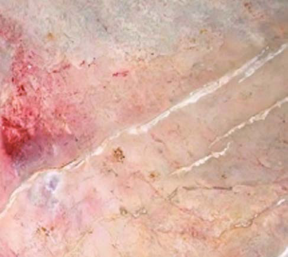<figcaption>Figure fig_ch01_p007_02 (Page 7)</figcaption></figure>
  <figure class="diagram-card" id="fig_ch01_p007_05"><figcaption>Figure fig_ch01_p007_05 (Page 7)</figcaption></figure>
  <figure class="diagram-card" id="fig_ch01_p007_06"><figcaption>Figure fig_ch01_p007_06 (Page 7)</figcaption></figure>
  <figure class="diagram-card" id="fig_ch01_p007_07"><figcaption>Figure fig_ch01_p007_07 (Page 7)</figcaption></figure>
  <figure class="diagram-card" id="fig_ch01_p007_08"><figcaption>Figure fig_ch01_p007_08 (Page 7)</figcaption></figure>
  <figure class="diagram-card" id="fig_ch01_p007_09"><figcaption>Figure fig_ch01_p007_09 (Page 7)</figcaption></figure>
  <figure class="diagram-card" id="fig_ch01_p007_10"><figcaption>Figure fig_ch01_p007_10 (Page 7)</figcaption></figure>
  <figure class="diagram-card" id="fig_ch01_p007_11"><figcaption>Figure fig_ch01_p007_11 (Page 7)</figcaption></figure>
  <figure class="diagram-card" id="fig_ch01_p007_12"><figcaption>Figure fig_ch01_p007_12 (Page 7)</figcaption></figure>
  <figure class="diagram-card" id="fig_ch01_p007_13"><figcaption>Figure fig_ch01_p007_13 (Page 7)</figcaption></figure>
  <figure class="diagram-card" id="fig_ch01_p007_14"><figcaption>Figure fig_ch01_p007_14 (Page 7)</figcaption></figure>
  <figure class="diagram-card" id="fig_ch01_p007_15"><figcaption>Figure fig_ch01_p007_15 (Page 7)</figcaption></figure>
  <figure class="diagram-card" id="fig_ch01_p007_16"><figcaption>Figure fig_ch01_p007_16 (Page 7)</figcaption></figure>
  <figure class="diagram-card" id="fig_ch01_p007_17"><figcaption>Figure fig_ch01_p007_17 (Page 7)</figcaption></figure>
  <figure class="diagram-card" id="fig_ch01_p007_18"><figcaption>Figure fig_ch01_p007_18 (Page 7)</figcaption></figure>
  <figure class="diagram-card" id="fig_ch01_p007_19"><figcaption>Figure fig_ch01_p007_19 (Page 7)</figcaption></figure>
  <figure class="diagram-card" id="fig_ch01_p007_20"><figcaption>Figure fig_ch01_p007_20 (Page 7)</figcaption></figure>
  <figure class="diagram-card" id="fig_ch01_p007_21"><figcaption>Figure fig_ch01_p007_21 (Page 7)</figcaption></figure>
  <figure class="diagram-card" id="fig_ch01_p007_22"><figcaption>Figure fig_ch01_p007_22 (Page 7)</figcaption></figure>
  <figure class="diagram-card" id="fig_ch01_p007_23"><figcaption>Figure fig_ch01_p007_23 (Page 7)</figcaption></figure>
  <figure class="diagram-card" id="fig_ch01_p007_24"><figcaption>Figure fig_ch01_p007_24 (Page 7)</figcaption></figure>
  <figure class="diagram-card" id="fig_ch01_p007_25"><figcaption>Figure fig_ch01_p007_25 (Page 7)</figcaption></figure>
  <figure class="diagram-card" id="fig_ch01_p007_26"><figcaption>Figure fig_ch01_p007_26 (Page 7)</figcaption></figure>
  <figure class="diagram-card" id="fig_ch01_p007_27"><figcaption>Figure fig_ch01_p007_27 (Page 7)</figcaption></figure>
  <figure class="diagram-card" id="fig_ch01_p007_28"><figcaption>Figure fig_ch01_p007_28 (Page 7)</figcaption></figure>
  <figure class="diagram-card" id="fig_ch01_p007_29"><figcaption>Figure fig_ch01_p007_29 (Page 7)</figcaption></figure>
  <figure class="diagram-card" id="fig_ch01_p007_30"><figcaption>Figure fig_ch01_p007_30 (Page 7)</figcaption></figure>
  <figure class="diagram-card" id="fig_ch01_p007_31"><figcaption>Figure fig_ch01_p007_31 (Page 7)</figcaption></figure>
  <figure class="diagram-card" id="fig_ch01_p007_32"><figcaption>Figure fig_ch01_p007_32 (Page 7)</figcaption></figure>
  <figure class="diagram-card" id="fig_ch01_p007_33"><figcaption>Figure fig_ch01_p007_33 (Page 7)</figcaption></figure>
  <figure class="diagram-card" id="fig_ch01_p007_34"><figcaption>Figure fig_ch01_p007_34 (Page 7)</figcaption></figure>
  <figure class="diagram-card" id="fig_ch01_p007_35"><figcaption>Figure fig_ch01_p007_35 (Page 7)</figcaption></figure>
  <figure class="diagram-card" id="fig_ch01_p007_36"><figcaption>Figure fig_ch01_p007_36 (Page 7)</figcaption></figure>
  <figure class="diagram-card" id="fig_ch01_p007_37"><figcaption>Figure fig_ch01_p007_37 (Page 7)</figcaption></figure>
  <figure class="diagram-card" id="fig_ch01_p007_38"><figcaption>Figure fig_ch01_p007_38 (Page 7)</figcaption></figure>
  <figure class="diagram-card" id="fig_ch01_p007_39"><figcaption>Figure fig_ch01_p007_39 (Page 7)</figcaption></figure>
  <figure class="diagram-card" id="fig_ch01_p007_40"><figcaption>Figure fig_ch01_p007_40 (Page 7)</figcaption></figure>
  <figure class="diagram-card" id="fig_ch01_p007_41"><figcaption>Figure fig_ch01_p007_41 (Page 7)</figcaption></figure>
  <figure class="diagram-card" id="fig_ch01_p007_42"><figcaption>Figure fig_ch01_p007_42 (Page 7)</figcaption></figure>
  <figure class="diagram-card" id="fig_ch01_p007_43"><figcaption>Figure fig_ch01_p007_43 (Page 7)</figcaption></figure>
  <figure class="diagram-card" id="fig_ch01_p007_44"><figcaption>Figure fig_ch01_p007_44 (Page 7)</figcaption></figure>
  <figure class="diagram-card" id="fig_ch01_p007_45"><figcaption>Figure fig_ch01_p007_45 (Page 7)</figcaption></figure>
  <figure class="diagram-card" id="fig_ch01_p007_46"><figcaption>Figure fig_ch01_p007_46 (Page 7)</figcaption></figure>
  <div class="page-content">
    <p>z“—ŐšÆ¡†—§“›¡źÍpŽĄÄŒsÇڍăsŝsÇÎmųՂ››Æ†›ųǬ‹šuŒš§<br>†›āÇŒs‘›Æ“š›ă‚§f„›ŒŒ†•DzŽ¡}zœ“›‚¡Ĺڝ›ăš§hsśÆ–žx†<br>†Æsų‚§<br>sšĞzŦÚ‘›Æ†›ų§Žä¢†}šÄŒ†•DzÅn‚‚ŽciˆsŽāÇiˆ¢šu›ă›Žų<br>mųš§e¢Ŕ—cg“›¡}ˆų‚§?<br>zsƽ¡sšĬǬŒ’<br><br>z<br><br>z<br>Œ†•DzŽcŒǯzœ“›s‘c<br>‚ƣ›ǬƂ…š†“Dz‚Dzš–c<br>Œ†•DzŽ¡}Šŗ›”Þ›š¡ų§<br>s’›ĚsśÆsĬ“¢ƽš<br>Šŗ›”Þ›gƽš›Žų¡“ÿ›Æ<br>“›sšĞzŦÚÇŒ†•Dz¡Ž<br>†”›ƀ›ăs‘Œš›Žų<br>f„›ŒŒ†•DzÅÚ§‚¡ź”ŅÚ<br>¢‘š}¡ˆšŽ‚šÄƂ¢‚Dzsc<br>f…ā‘Ĭš›Žų›ƽ<br>e“¡}¢†¡Žs¡ƽ›šÄ<br>ŒšŅ¢Œe“ÅÚ§<br>s’›Œš›ŽųǬˆ›¡ųe“Å<br>sƽ¡sšĬ§Œ’sŦcmų›“<br>¢ˆšǬiˆsŽā‘c<br>sƖžx›s‘ciĬšÚšÄˆ~›ă<br>gŎśǬe¢†sc”›š<br>…āÇ–­Ĺ§¡sĖ›w§}Ã<br>ĬÄ
sš’§xŠcøš“›cz†œ“<br>›¡sš’§xŠcøš“›csšs<br>Ĭš¢ƽš<br>”›šuśÆ†›ų§<br>Œ¢ųšĞ§<br>1</p>
  </div>
</section>
<section class="page-section" id="page-8">
  <div class="page-header"><span class="page-number">Page 8</span></div>
  <figure class="diagram-card" id="fig_ch01_p008_01"><figcaption>Figure fig_ch01_p008_01 (Page 8)</figcaption></figure>
  <figure class="diagram-card" id="fig_ch01_p008_02"><figcaption>Figure fig_ch01_p008_02 (Page 8)</figcaption></figure>
  <figure class="diagram-card" id="fig_ch01_p008_03"><figcaption>Figure fig_ch01_p008_03 (Page 8)</figcaption></figure>
  <figure class="diagram-card" id="fig_ch01_p008_04"><figcaption>Figure fig_ch01_p008_04 (Page 8)</figcaption></figure>
  <figure class="diagram-card" id="fig_ch01_p008_05"><figcaption>Figure fig_ch01_p008_05 (Page 8)</figcaption></figure>
  <figure class="diagram-card" id="fig_ch01_p008_06">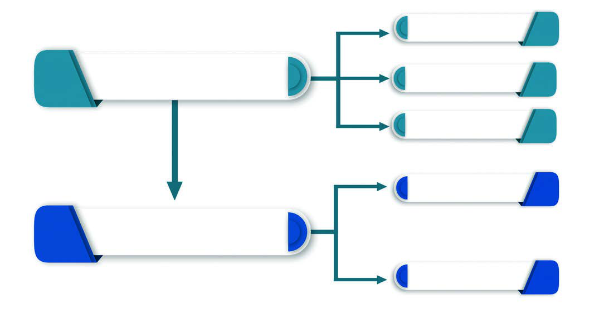<figcaption>Figure fig_ch01_p008_06 (Page 8)</figcaption></figure>
  <div class="page-content">
    <p>e…Dzšc<br>–šŒž—Dz”šȼc-<br>8<br>Ƃšxœ†”›šuc<br>(Palaeolithic Age)<br>Œ…Dz”›šuc<br>(Mesolithic Age)<br>†“œ†”›šuc<br>(Neolithic Age)<br>gŽƠuc<br>(Iron Age)<br>”›šuc<br>(Stone Age)<br>¢š—uc<br>(Metal Age)<br>gŎciˆsŽāÇeښ¡ĹŒ†•DzÅm¡Ŧš¡Úf“”DzāÇ<br>ښ›iˆ¢šu›ă›ĞĬšsc?<br>zƜuā‘›Æ†›ų§Žä¢†}šÄ<br>z¢“Ѝš}šÄ<br><br>z<br>¢ŒƺĚ f“”DzāÇښ› Œ†•DzÅ †›Åƣ›ă iˆsŽāÇ<br>‚}ÚśÆ”›sÇ¡sšĬǬ“š›Žųˆ›ÆښĹ§ ”›¡}<br>ǚš†Ĺ§ ¢š—āÇs}ų“ų<br>Œ†•DzÅ iˆsŽāÇ †›Åƣ›ÚšÄ iˆ¢šu›ă “ǙÚ‘¡}<br>e}›ǚš†Ĺ›Æ ˆŽš“Ǚu¢“•sÅ Œš†“xŽ›Ņ¡Ĺ “›“›…<br>sšvĞā‘š›‚›Ž›Úų<br>”›šuc(Stone Age)<br>Œš†“xŽ›Ņś¡ź f„DzvĞ¡Ĺ<br>”›šu¡Œų§ “›‘›ă‚§ mŦ<br>¡sšĬš¡ų§ †›āÇ x›Ŧ›ă›Ğ¢Ĭš? eښĹ§ Œ†•DzÅ iˆsŽ<br>ā‘cf…ā‘cƂ…š†Œšc†›Åƣ›ă›Žų‚§sƽ¡sšĬš§<br>e‚›†šÆ xŽ›ŅsšŽÅ f„DzvĞ¡Ĺ<br>”›šuc mų§ “›¢”•›<br>ƀ›Úų sƽsÇ¡sšĬǬ iˆsŽā‘¡} †›ÅƣšŽœ‚›¡<br>e}›ǚš†ŒšÚ›<br>”›šu¡Ĺ Ƃšxœ†”›šuc Œ…Dz”›šuc<br>†“œ†”›šucmų›ā¡†Œžųš›‚›Ž›Úų<br>g“q¢Žšų›¡źc–“›¢”•‚sÇ¢†šÚšc<br>¡“ÿuc<br>(Bronze Age)</p>
  </div>
</section>
<section class="page-section" id="page-9">
  <div class="page-header"><span class="page-number">Page 9</span></div>
  <figure class="diagram-card" id="fig_ch01_p009_01"><figcaption>Figure fig_ch01_p009_01 (Page 9)</figcaption></figure>
  <figure class="diagram-card" id="fig_ch01_p009_02"><figcaption>Figure fig_ch01_p009_02 (Page 9)</figcaption></figure>
  <figure class="diagram-card" id="fig_ch01_p009_03"><figcaption>Figure fig_ch01_p009_03 (Page 9)</figcaption></figure>
  <figure class="diagram-card" id="fig_ch01_p009_04"><figcaption>Figure fig_ch01_p009_04 (Page 9)</figcaption></figure>
  <figure class="diagram-card" id="fig_ch01_p009_05"><figcaption>Figure fig_ch01_p009_05 (Page 9)</figcaption></figure>
  <figure class="diagram-card" id="fig_ch01_p009_06"><figcaption>Figure fig_ch01_p009_06 (Page 9)</figcaption></figure>
  <figure class="diagram-card" id="fig_ch01_p009_07"><figcaption>Figure fig_ch01_p009_07 (Page 9)</figcaption></figure>
  <figure class="diagram-card" id="fig_ch01_p009_08"><figcaption>Figure fig_ch01_p009_08 (Page 9)</figcaption></figure>
  <figure class="diagram-card" id="fig_ch01_p009_09"><figcaption>Figure fig_ch01_p009_09 (Page 9)</figcaption></figure>
  <figure class="diagram-card" id="fig_ch01_p009_10"><figcaption>Figure fig_ch01_p009_10 (Page 9)</figcaption></figure>
  <figure class="diagram-card" id="fig_ch01_p009_11"><figcaption>Figure fig_ch01_p009_11 (Page 9)</figcaption></figure>
  <figure class="diagram-card" id="fig_ch01_p009_12"><figcaption>Figure fig_ch01_p009_12 (Page 9)</figcaption></figure>
  <figure class="diagram-card" id="fig_ch01_p009_13"><figcaption>Figure fig_ch01_p009_13 (Page 9)</figcaption></figure>
  <figure class="diagram-card" id="fig_ch01_p009_14"><figcaption>Figure fig_ch01_p009_14 (Page 9)</figcaption></figure>
  <figure class="diagram-card" id="fig_ch01_p009_15"><figcaption>Figure fig_ch01_p009_15 (Page 9)</figcaption></figure>
  <figure class="diagram-card" id="fig_ch01_p009_16"><figcaption>Figure fig_ch01_p009_16 (Page 9)</figcaption></figure>
  <figure class="diagram-card" id="fig_ch01_p009_17"><figcaption>Figure fig_ch01_p009_17 (Page 9)</figcaption></figure>
  <figure class="diagram-card" id="fig_ch01_p009_18"><figcaption>Figure fig_ch01_p009_18 (Page 9)</figcaption></figure>
  <figure class="diagram-card" id="fig_ch01_p009_19"><figcaption>Figure fig_ch01_p009_19 (Page 9)</figcaption></figure>
  <figure class="diagram-card" id="fig_ch01_p009_20"><figcaption>Figure fig_ch01_p009_20 (Page 9)</figcaption></figure>
  <figure class="diagram-card" id="fig_ch01_p009_21"><figcaption>Figure fig_ch01_p009_21 (Page 9)</figcaption></figure>
  <figure class="diagram-card" id="fig_ch01_p009_22"><figcaption>Figure fig_ch01_p009_22 (Page 9)</figcaption></figure>
  <figure class="diagram-card" id="fig_ch01_p009_23"><figcaption>Figure fig_ch01_p009_23 (Page 9)</figcaption></figure>
  <figure class="diagram-card" id="fig_ch01_p009_24"><figcaption>Figure fig_ch01_p009_24 (Page 9)</figcaption></figure>
  <figure class="diagram-card" id="fig_ch01_p009_25"><figcaption>Figure fig_ch01_p009_25 (Page 9)</figcaption></figure>
  <figure class="diagram-card" id="fig_ch01_p009_26"><figcaption>Figure fig_ch01_p009_26 (Page 9)</figcaption></figure>
  <figure class="diagram-card" id="fig_ch01_p009_27"><figcaption>Figure fig_ch01_p009_27 (Page 9)</figcaption></figure>
  <figure class="diagram-card" id="fig_ch01_p009_28"><figcaption>Figure fig_ch01_p009_28 (Page 9)</figcaption></figure>
  <figure class="diagram-card" id="fig_ch01_p009_29"><figcaption>Figure fig_ch01_p009_29 (Page 9)</figcaption></figure>
  <figure class="diagram-card" id="fig_ch01_p009_30"><figcaption>Figure fig_ch01_p009_30 (Page 9)</figcaption></figure>
  <figure class="diagram-card" id="fig_ch01_p009_31"><figcaption>Figure fig_ch01_p009_31 (Page 9)</figcaption></figure>
  <figure class="diagram-card" id="fig_ch01_p009_32"><figcaption>Figure fig_ch01_p009_32 (Page 9)</figcaption></figure>
  <figure class="diagram-card" id="fig_ch01_p009_33"><figcaption>Figure fig_ch01_p009_33 (Page 9)</figcaption></figure>
  <figure class="diagram-card" id="fig_ch01_p009_34"><figcaption>Figure fig_ch01_p009_34 (Page 9)</figcaption></figure>
  <figure class="diagram-card" id="fig_ch01_p009_35"><figcaption>Figure fig_ch01_p009_35 (Page 9)</figcaption></figure>
  <figure class="diagram-card" id="fig_ch01_p009_36"><figcaption>Figure fig_ch01_p009_36 (Page 9)</figcaption></figure>
  <figure class="diagram-card" id="fig_ch01_p009_37"><figcaption>Figure fig_ch01_p009_37 (Page 9)</figcaption></figure>
  <figure class="diagram-card" id="fig_ch01_p009_38"><figcaption>Figure fig_ch01_p009_38 (Page 9)</figcaption></figure>
  <figure class="diagram-card" id="fig_ch01_p009_39"><figcaption>Figure fig_ch01_p009_39 (Page 9)</figcaption></figure>
  <figure class="diagram-card" id="fig_ch01_p009_40"><figcaption>Figure fig_ch01_p009_40 (Page 9)</figcaption></figure>
  <figure class="diagram-card" id="fig_ch01_p009_41"><figcaption>Figure fig_ch01_p009_41 (Page 9)</figcaption></figure>
  <figure class="diagram-card" id="fig_ch01_p009_42"><figcaption>Figure fig_ch01_p009_42 (Page 9)</figcaption></figure>
  <figure class="diagram-card" id="fig_ch01_p009_43"><figcaption>Figure fig_ch01_p009_43 (Page 9)</figcaption></figure>
  <figure class="diagram-card" id="fig_ch01_p009_44"><figcaption>Figure fig_ch01_p009_44 (Page 9)</figcaption></figure>
  <figure class="diagram-card" id="fig_ch01_p009_45"><figcaption>Figure fig_ch01_p009_45 (Page 9)</figcaption></figure>
  <figure class="diagram-card" id="fig_ch01_p009_46"><figcaption>Figure fig_ch01_p009_46 (Page 9)</figcaption></figure>
  <figure class="diagram-card" id="fig_ch01_p009_47"><figcaption>Figure fig_ch01_p009_47 (Page 9)</figcaption></figure>
  <figure class="diagram-card" id="fig_ch01_p009_48"><figcaption>Figure fig_ch01_p009_48 (Page 9)</figcaption></figure>
  <figure class="diagram-card" id="fig_ch01_p009_49">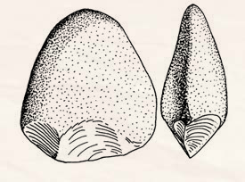<figcaption>Figure fig_ch01_p009_49 (Page 9)</figcaption></figure>
  <figure class="diagram-card" id="fig_ch01_p009_50">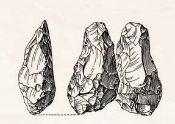<figcaption>Figure fig_ch01_p009_50 (Page 9)</figcaption></figure>
  <figure class="diagram-card" id="fig_ch01_p009_51">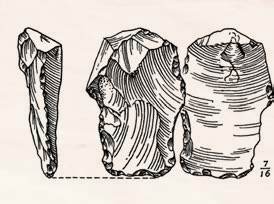<figcaption>Figure fig_ch01_p009_51 (Page 9)</figcaption></figure>
  <figure class="diagram-card" id="fig_ch01_p009_52"><figcaption>Figure fig_ch01_p009_52 (Page 9)</figcaption></figure>
  <figure class="diagram-card" id="fig_ch01_p009_53"><figcaption>Figure fig_ch01_p009_53 (Page 9)</figcaption></figure>
  <figure class="diagram-card" id="fig_ch01_p009_54"><figcaption>Figure fig_ch01_p009_54 (Page 9)</figcaption></figure>
  <figure class="diagram-card" id="fig_ch01_p009_55"><figcaption>Figure fig_ch01_p009_55 (Page 9)</figcaption></figure>
  <figure class="diagram-card" id="fig_ch01_p009_56"><figcaption>Figure fig_ch01_p009_56 (Page 9)</figcaption></figure>
  <figure class="diagram-card" id="fig_ch01_p009_57"><figcaption>Figure fig_ch01_p009_57 (Page 9)</figcaption></figure>
  <figure class="diagram-card" id="fig_ch01_p009_58"><figcaption>Figure fig_ch01_p009_58 (Page 9)</figcaption></figure>
  <figure class="diagram-card" id="fig_ch01_p009_59"><figcaption>Figure fig_ch01_p009_59 (Page 9)</figcaption></figure>
  <figure class="diagram-card" id="fig_ch01_p009_60"><figcaption>Figure fig_ch01_p009_60 (Page 9)</figcaption></figure>
  <figure class="diagram-card" id="fig_ch01_p009_61"><figcaption>Figure fig_ch01_p009_61 (Page 9)</figcaption></figure>
  <figure class="diagram-card" id="fig_ch01_p009_62"><figcaption>Figure fig_ch01_p009_62 (Page 9)</figcaption></figure>
  <figure class="diagram-card" id="fig_ch01_p009_63"><figcaption>Figure fig_ch01_p009_63 (Page 9)</figcaption></figure>
  <figure class="diagram-card" id="fig_ch01_p009_64"><figcaption>Figure fig_ch01_p009_64 (Page 9)</figcaption></figure>
  <figure class="diagram-card" id="fig_ch01_p009_65"><figcaption>Figure fig_ch01_p009_65 (Page 9)</figcaption></figure>
  <figure class="diagram-card" id="fig_ch01_p009_66"><figcaption>Figure fig_ch01_p009_66 (Page 9)</figcaption></figure>
  <figure class="diagram-card" id="fig_ch01_p009_67"><figcaption>Figure fig_ch01_p009_67 (Page 9)</figcaption></figure>
  <figure class="diagram-card" id="fig_ch01_p009_68"><figcaption>Figure fig_ch01_p009_68 (Page 9)</figcaption></figure>
  <figure class="diagram-card" id="fig_ch01_p009_69"><figcaption>Figure fig_ch01_p009_69 (Page 9)</figcaption></figure>
  <figure class="diagram-card" id="fig_ch01_p009_70"><figcaption>Figure fig_ch01_p009_70 (Page 9)</figcaption></figure>
  <figure class="diagram-card" id="fig_ch01_p009_71"><figcaption>Figure fig_ch01_p009_71 (Page 9)</figcaption></figure>
  <figure class="diagram-card" id="fig_ch01_p009_72"><figcaption>Figure fig_ch01_p009_72 (Page 9)</figcaption></figure>
  <figure class="diagram-card" id="fig_ch01_p009_73"><figcaption>Figure fig_ch01_p009_73 (Page 9)</figcaption></figure>
  <figure class="diagram-card" id="fig_ch01_p009_74"><figcaption>Figure fig_ch01_p009_74 (Page 9)</figcaption></figure>
  <figure class="diagram-card" id="fig_ch01_p009_75"><figcaption>Figure fig_ch01_p009_75 (Page 9)</figcaption></figure>
  <figure class="diagram-card" id="fig_ch01_p009_76"><figcaption>Figure fig_ch01_p009_76 (Page 9)</figcaption></figure>
  <figure class="diagram-card" id="fig_ch01_p009_77"><figcaption>Figure fig_ch01_p009_77 (Page 9)</figcaption></figure>
  <figure class="diagram-card" id="fig_ch01_p009_78"><figcaption>Figure fig_ch01_p009_78 (Page 9)</figcaption></figure>
  <figure class="diagram-card" id="fig_ch01_p009_79"><figcaption>Figure fig_ch01_p009_79 (Page 9)</figcaption></figure>
  <figure class="diagram-card" id="fig_ch01_p009_80"><figcaption>Figure fig_ch01_p009_80 (Page 9)</figcaption></figure>
  <figure class="diagram-card" id="fig_ch01_p009_81"><figcaption>Figure fig_ch01_p009_81 (Page 9)</figcaption></figure>
  <figure class="diagram-card" id="fig_ch01_p009_82"><figcaption>Figure fig_ch01_p009_82 (Page 9)</figcaption></figure>
  <figure class="diagram-card" id="fig_ch01_p009_83"><figcaption>Figure fig_ch01_p009_83 (Page 9)</figcaption></figure>
  <figure class="diagram-card" id="fig_ch01_p009_84"><figcaption>Figure fig_ch01_p009_84 (Page 9)</figcaption></figure>
  <figure class="diagram-card" id="fig_ch01_p009_85"><figcaption>Figure fig_ch01_p009_85 (Page 9)</figcaption></figure>
  <figure class="diagram-card" id="fig_ch01_p009_86"><figcaption>Figure fig_ch01_p009_86 (Page 9)</figcaption></figure>
  <figure class="diagram-card" id="fig_ch01_p009_87"><figcaption>Figure fig_ch01_p009_87 (Page 9)</figcaption></figure>
  <figure class="diagram-card" id="fig_ch01_p009_88"><figcaption>Figure fig_ch01_p009_88 (Page 9)</figcaption></figure>
  <figure class="diagram-card" id="fig_ch01_p009_89"><figcaption>Figure fig_ch01_p009_89 (Page 9)</figcaption></figure>
  <figure class="diagram-card" id="fig_ch01_p009_90"><figcaption>Figure fig_ch01_p009_90 (Page 9)</figcaption></figure>
  <figure class="diagram-card" id="fig_ch01_p009_91"><figcaption>Figure fig_ch01_p009_91 (Page 9)</figcaption></figure>
  <figure class="diagram-card" id="fig_ch01_p009_92"><figcaption>Figure fig_ch01_p009_92 (Page 9)</figcaption></figure>
  <figure class="diagram-card" id="fig_ch01_p009_93"><figcaption>Figure fig_ch01_p009_93 (Page 9)</figcaption></figure>
  <figure class="diagram-card" id="fig_ch01_p009_94"><figcaption>Figure fig_ch01_p009_94 (Page 9)</figcaption></figure>
  <figure class="diagram-card" id="fig_ch01_p009_95"><figcaption>Figure fig_ch01_p009_95 (Page 9)</figcaption></figure>
  <div class="page-content">
    <p>”›šuśÆ†›ų§Œ¢ųšĞ§<br>ǢšÄ¢Å§-&lt;<br>9<br>Ƃšxœ†”›šuc(Palaeolithic Age)<br>ˆŽÚÄ ”›š iˆsŽā‘š§ Ƃšxœ†”›šu sšvĞś¡<br>iˆsŽā‘¡}Ƃ…š†–“›¢”•‚͈š›¢š–§ÎƂšxœ†c
͐›¢Ĺš–§Î<br>”›
mųœ ŽĬ÷œÚˆ„ā‘›Æ†›ųš§͈š›¢š›Ĺ›s§Îmų<br>ˆ„cŽžˆc¡sšĬ‚§<br>f„›ŒŒ†•DzŽ¡}zœ“¢†šˆš…›s‘Œš›ŠŰŒǬ‚š§iˆsŽ<br>ā‘¡} †›Åƣšc iˆsŽā‘¡} iˆ¢šuśÆ Œžų Ƃ…š†<br>vĞāÇiĬš›Žų‚š›ˆŽš“Ǚu¢“•sÅxžĬ›Úš›Úų<br>e“x“¡}†Æsų<br>Ƃ¢šz†¡ƀ}ĹÆ<br>(Utilization)<br>‹DzŒšsƽs¡‘ ŽžˆŒšǯc“ŽĹš¡‚<br>‚¡ųiˆ¢šu›Úų Žœ‚›<br>‹DzŒšsƽs¡‘f“”Dzš†–Žc<br>ŽžˆŒšǯc“ŽĹ›iˆ¢šu›Úų Žœ‚›<br>q¢Žšf“”Dzś†cƂ¢‚Dzs‚Žc<br>iˆsŽādž›Åƣ›Úų Žœ‚›<br>ŽžˆŒšǯc“ŽĹÆ<br>(Fashioning)<br>⌓Æڎc<br>(Standardization)<br>Ƃšxœ†”›šuś¡“›“›…vĞā‘›Æf„›ŒŒ†•DzÅiˆ¢šu›ă<br>“Dz‚DzǙ iˆsŽā‘¡} x›Ņā‘š§ x“¡} ‚ų›Ž›Úų‚§ e“<br>†›Žœä›ă§hiˆsŽā‘¡}–“›¢”•‚sLjЛs¡ƀ}Ĺs<br>iŽ‘ÄsƽˆsŽāÇ<br>(Pebble tools)<br>„ǵ›ŒtŒšĶ”›šiˆsŽāÇ<br>(Biface core tools)<br>sÆ㜑ˆsŽāÇ<br>(Flake tools)</p>
  </div>
</section>
<section class="page-section" id="page-10">
  <div class="page-header"><span class="page-number">Page 10</span></div>
  <figure class="diagram-card" id="fig_ch01_p010_01"><figcaption>Figure fig_ch01_p010_01 (Page 10)</figcaption></figure>
  <figure class="diagram-card" id="fig_ch01_p010_02"><figcaption>Figure fig_ch01_p010_02 (Page 10)</figcaption></figure>
  <figure class="diagram-card" id="fig_ch01_p010_03"><figcaption>Figure fig_ch01_p010_03 (Page 10)</figcaption></figure>
  <figure class="diagram-card" id="fig_ch01_p010_04"><figcaption>Figure fig_ch01_p010_04 (Page 10)</figcaption></figure>
  <figure class="diagram-card" id="fig_ch01_p010_05"><figcaption>Figure fig_ch01_p010_05 (Page 10)</figcaption></figure>
  <figure class="diagram-card" id="fig_ch01_p010_06"><figcaption>Figure fig_ch01_p010_06 (Page 10)</figcaption></figure>
  <figure class="diagram-card" id="fig_ch01_p010_07"><figcaption>Figure fig_ch01_p010_07 (Page 10)</figcaption></figure>
  <figure class="diagram-card" id="fig_ch01_p010_08"><figcaption>Figure fig_ch01_p010_08 (Page 10)</figcaption></figure>
  <figure class="diagram-card" id="fig_ch01_p010_09"><figcaption>Figure fig_ch01_p010_09 (Page 10)</figcaption></figure>
  <figure class="diagram-card" id="fig_ch01_p010_10"><figcaption>Figure fig_ch01_p010_10 (Page 10)</figcaption></figure>
  <figure class="diagram-card" id="fig_ch01_p010_11"><figcaption>Figure fig_ch01_p010_11 (Page 10)</figcaption></figure>
  <figure class="diagram-card" id="fig_ch01_p010_12"><figcaption>Figure fig_ch01_p010_12 (Page 10)</figcaption></figure>
  <figure class="diagram-card" id="fig_ch01_p010_13"><figcaption>Figure fig_ch01_p010_13 (Page 10)</figcaption></figure>
  <figure class="diagram-card" id="fig_ch01_p010_14"><figcaption>Figure fig_ch01_p010_14 (Page 10)</figcaption></figure>
  <figure class="diagram-card" id="fig_ch01_p010_15"><figcaption>Figure fig_ch01_p010_15 (Page 10)</figcaption></figure>
  <figure class="diagram-card" id="fig_ch01_p010_16"><figcaption>Figure fig_ch01_p010_16 (Page 10)</figcaption></figure>
  <figure class="diagram-card" id="fig_ch01_p010_17"><figcaption>Figure fig_ch01_p010_17 (Page 10)</figcaption></figure>
  <figure class="diagram-card" id="fig_ch01_p010_18"><figcaption>Figure fig_ch01_p010_18 (Page 10)</figcaption></figure>
  <figure class="diagram-card" id="fig_ch01_p010_19"><figcaption>Figure fig_ch01_p010_19 (Page 10)</figcaption></figure>
  <figure class="diagram-card" id="fig_ch01_p010_20"><figcaption>Figure fig_ch01_p010_20 (Page 10)</figcaption></figure>
  <figure class="diagram-card" id="fig_ch01_p010_21"><figcaption>Figure fig_ch01_p010_21 (Page 10)</figcaption></figure>
  <figure class="diagram-card" id="fig_ch01_p010_22"><figcaption>Figure fig_ch01_p010_22 (Page 10)</figcaption></figure>
  <figure class="diagram-card" id="fig_ch01_p010_23"><figcaption>Figure fig_ch01_p010_23 (Page 10)</figcaption></figure>
  <figure class="diagram-card" id="fig_ch01_p010_24"><figcaption>Figure fig_ch01_p010_24 (Page 10)</figcaption></figure>
  <figure class="diagram-card" id="fig_ch01_p010_25"><figcaption>Figure fig_ch01_p010_25 (Page 10)</figcaption></figure>
  <figure class="diagram-card" id="fig_ch01_p010_26"><figcaption>Figure fig_ch01_p010_26 (Page 10)</figcaption></figure>
  <figure class="diagram-card" id="fig_ch01_p010_27"><figcaption>Figure fig_ch01_p010_27 (Page 10)</figcaption></figure>
  <figure class="diagram-card" id="fig_ch01_p010_28"><figcaption>Figure fig_ch01_p010_28 (Page 10)</figcaption></figure>
  <figure class="diagram-card" id="fig_ch01_p010_29"><figcaption>Figure fig_ch01_p010_29 (Page 10)</figcaption></figure>
  <figure class="diagram-card" id="fig_ch01_p010_30"><figcaption>Figure fig_ch01_p010_30 (Page 10)</figcaption></figure>
  <figure class="diagram-card" id="fig_ch01_p010_31"><figcaption>Figure fig_ch01_p010_31 (Page 10)</figcaption></figure>
  <figure class="diagram-card" id="fig_ch01_p010_32"><figcaption>Figure fig_ch01_p010_32 (Page 10)</figcaption></figure>
  <figure class="diagram-card" id="fig_ch01_p010_33"><figcaption>Figure fig_ch01_p010_33 (Page 10)</figcaption></figure>
  <figure class="diagram-card" id="fig_ch01_p010_34"><figcaption>Figure fig_ch01_p010_34 (Page 10)</figcaption></figure>
  <figure class="diagram-card" id="fig_ch01_p010_35"><figcaption>Figure fig_ch01_p010_35 (Page 10)</figcaption></figure>
  <figure class="diagram-card" id="fig_ch01_p010_36"><figcaption>Figure fig_ch01_p010_36 (Page 10)</figcaption></figure>
  <figure class="diagram-card" id="fig_ch01_p010_37"><figcaption>Figure fig_ch01_p010_37 (Page 10)</figcaption></figure>
  <figure class="diagram-card" id="fig_ch01_p010_38"><figcaption>Figure fig_ch01_p010_38 (Page 10)</figcaption></figure>
  <figure class="diagram-card" id="fig_ch01_p010_39"><figcaption>Figure fig_ch01_p010_39 (Page 10)</figcaption></figure>
  <figure class="diagram-card" id="fig_ch01_p010_40"><figcaption>Figure fig_ch01_p010_40 (Page 10)</figcaption></figure>
  <figure class="diagram-card" id="fig_ch01_p010_41"><figcaption>Figure fig_ch01_p010_41 (Page 10)</figcaption></figure>
  <figure class="diagram-card" id="fig_ch01_p010_42"><figcaption>Figure fig_ch01_p010_42 (Page 10)</figcaption></figure>
  <figure class="diagram-card" id="fig_ch01_p010_43"><figcaption>Figure fig_ch01_p010_43 (Page 10)</figcaption></figure>
  <figure class="diagram-card" id="fig_ch01_p010_44"><figcaption>Figure fig_ch01_p010_44 (Page 10)</figcaption></figure>
  <figure class="diagram-card" id="fig_ch01_p010_45"><figcaption>Figure fig_ch01_p010_45 (Page 10)</figcaption></figure>
  <figure class="diagram-card" id="fig_ch01_p010_46"><figcaption>Figure fig_ch01_p010_46 (Page 10)</figcaption></figure>
  <figure class="diagram-card" id="fig_ch01_p010_47"><figcaption>Figure fig_ch01_p010_47 (Page 10)</figcaption></figure>
  <figure class="diagram-card" id="fig_ch01_p010_48"><figcaption>Figure fig_ch01_p010_48 (Page 10)</figcaption></figure>
  <figure class="diagram-card" id="fig_ch01_p010_49"><figcaption>Figure fig_ch01_p010_49 (Page 10)</figcaption></figure>
  <figure class="diagram-card" id="fig_ch01_p010_50"><figcaption>Figure fig_ch01_p010_50 (Page 10)</figcaption></figure>
  <figure class="diagram-card" id="fig_ch01_p010_51"><figcaption>Figure fig_ch01_p010_51 (Page 10)</figcaption></figure>
  <figure class="diagram-card" id="fig_ch01_p010_52"><figcaption>Figure fig_ch01_p010_52 (Page 10)</figcaption></figure>
  <figure class="diagram-card" id="fig_ch01_p010_53"><figcaption>Figure fig_ch01_p010_53 (Page 10)</figcaption></figure>
  <figure class="diagram-card" id="fig_ch01_p010_54"><figcaption>Figure fig_ch01_p010_54 (Page 10)</figcaption></figure>
  <figure class="diagram-card" id="fig_ch01_p010_55"><figcaption>Figure fig_ch01_p010_55 (Page 10)</figcaption></figure>
  <figure class="diagram-card" id="fig_ch01_p010_56"><figcaption>Figure fig_ch01_p010_56 (Page 10)</figcaption></figure>
  <figure class="diagram-card" id="fig_ch01_p010_57"><figcaption>Figure fig_ch01_p010_57 (Page 10)</figcaption></figure>
  <figure class="diagram-card" id="fig_ch01_p010_58"><figcaption>Figure fig_ch01_p010_58 (Page 10)</figcaption></figure>
  <figure class="diagram-card" id="fig_ch01_p010_59"><figcaption>Figure fig_ch01_p010_59 (Page 10)</figcaption></figure>
  <figure class="diagram-card" id="fig_ch01_p010_60"><figcaption>Figure fig_ch01_p010_60 (Page 10)</figcaption></figure>
  <figure class="diagram-card" id="fig_ch01_p010_61"><figcaption>Figure fig_ch01_p010_61 (Page 10)</figcaption></figure>
  <figure class="diagram-card" id="fig_ch01_p010_62"><figcaption>Figure fig_ch01_p010_62 (Page 10)</figcaption></figure>
  <figure class="diagram-card" id="fig_ch01_p010_63"><figcaption>Figure fig_ch01_p010_63 (Page 10)</figcaption></figure>
  <figure class="diagram-card" id="fig_ch01_p010_64"><figcaption>Figure fig_ch01_p010_64 (Page 10)</figcaption></figure>
  <figure class="diagram-card" id="fig_ch01_p010_65"><figcaption>Figure fig_ch01_p010_65 (Page 10)</figcaption></figure>
  <figure class="diagram-card" id="fig_ch01_p010_66"><figcaption>Figure fig_ch01_p010_66 (Page 10)</figcaption></figure>
  <figure class="diagram-card" id="fig_ch01_p010_67"><figcaption>Figure fig_ch01_p010_67 (Page 10)</figcaption></figure>
  <figure class="diagram-card" id="fig_ch01_p010_68"><figcaption>Figure fig_ch01_p010_68 (Page 10)</figcaption></figure>
  <figure class="diagram-card" id="fig_ch01_p010_69">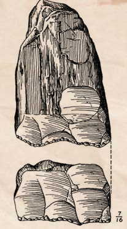<figcaption>Figure fig_ch01_p010_69 (Page 10)</figcaption></figure>
  <figure class="diagram-card" id="fig_ch01_p010_70"><figcaption>Figure fig_ch01_p010_70 (Page 10)</figcaption></figure>
  <figure class="diagram-card" id="fig_ch01_p010_71">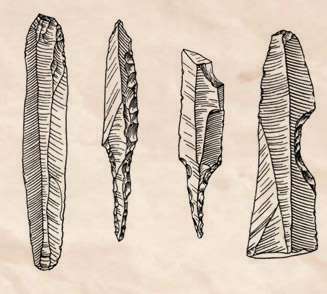<figcaption>Figure fig_ch01_p010_71 (Page 10)</figcaption></figure>
  <figure class="diagram-card" id="fig_ch01_p010_72">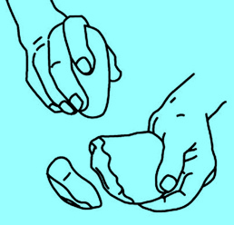<figcaption>Figure fig_ch01_p010_72 (Page 10)</figcaption></figure>
  <figure class="diagram-card" id="fig_ch01_p010_73"><figcaption>Figure fig_ch01_p010_73 (Page 10)</figcaption></figure>
  <figure class="diagram-card" id="fig_ch01_p010_74"><figcaption>Figure fig_ch01_p010_74 (Page 10)</figcaption></figure>
  <figure class="diagram-card" id="fig_ch01_p010_75"><figcaption>Figure fig_ch01_p010_75 (Page 10)</figcaption></figure>
  <figure class="diagram-card" id="fig_ch01_p010_76"><figcaption>Figure fig_ch01_p010_76 (Page 10)</figcaption></figure>
  <figure class="diagram-card" id="fig_ch01_p010_77"><figcaption>Figure fig_ch01_p010_77 (Page 10)</figcaption></figure>
  <figure class="diagram-card" id="fig_ch01_p010_78"><figcaption>Figure fig_ch01_p010_78 (Page 10)</figcaption></figure>
  <figure class="diagram-card" id="fig_ch01_p010_79"><figcaption>Figure fig_ch01_p010_79 (Page 10)</figcaption></figure>
  <figure class="diagram-card" id="fig_ch01_p010_80"><figcaption>Figure fig_ch01_p010_80 (Page 10)</figcaption></figure>
  <figure class="diagram-card" id="fig_ch01_p010_81"><figcaption>Figure fig_ch01_p010_81 (Page 10)</figcaption></figure>
  <figure class="diagram-card" id="fig_ch01_p010_82"><figcaption>Figure fig_ch01_p010_82 (Page 10)</figcaption></figure>
  <figure class="diagram-card" id="fig_ch01_p010_83"><figcaption>Figure fig_ch01_p010_83 (Page 10)</figcaption></figure>
  <figure class="diagram-card" id="fig_ch01_p010_84"><figcaption>Figure fig_ch01_p010_84 (Page 10)</figcaption></figure>
  <figure class="diagram-card" id="fig_ch01_p010_85"><figcaption>Figure fig_ch01_p010_85 (Page 10)</figcaption></figure>
  <figure class="diagram-card" id="fig_ch01_p010_86"><figcaption>Figure fig_ch01_p010_86 (Page 10)</figcaption></figure>
  <figure class="diagram-card" id="fig_ch01_p010_87">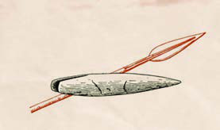<figcaption>Figure fig_ch01_p010_87 (Page 10)</figcaption></figure>
  <figure class="diagram-card" id="fig_ch01_p010_88">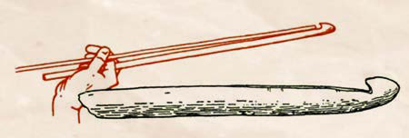<figcaption>Figure fig_ch01_p010_88 (Page 10)</figcaption></figure>
  <figure class="diagram-card" id="fig_ch01_p010_89"><figcaption>Figure fig_ch01_p010_89 (Page 10)</figcaption></figure>
  <figure class="diagram-card" id="fig_ch01_p010_90"><figcaption>Figure fig_ch01_p010_90 (Page 10)</figcaption></figure>
  <figure class="diagram-card" id="fig_ch01_p010_91"><figcaption>Figure fig_ch01_p010_91 (Page 10)</figcaption></figure>
  <figure class="diagram-card" id="fig_ch01_p010_92"><figcaption>Figure fig_ch01_p010_92 (Page 10)</figcaption></figure>
  <figure class="diagram-card" id="fig_ch01_p010_93"><figcaption>Figure fig_ch01_p010_93 (Page 10)</figcaption></figure>
  <figure class="diagram-card" id="fig_ch01_p010_94"><figcaption>Figure fig_ch01_p010_94 (Page 10)</figcaption></figure>
  <figure class="diagram-card" id="fig_ch01_p010_95"><figcaption>Figure fig_ch01_p010_95 (Page 10)</figcaption></figure>
  <figure class="diagram-card" id="fig_ch01_p010_96"><figcaption>Figure fig_ch01_p010_96 (Page 10)</figcaption></figure>
  <figure class="diagram-card" id="fig_ch01_p010_97"><figcaption>Figure fig_ch01_p010_97 (Page 10)</figcaption></figure>
  <figure class="diagram-card" id="fig_ch01_p010_98"><figcaption>Figure fig_ch01_p010_98 (Page 10)</figcaption></figure>
  <figure class="diagram-card" id="fig_ch01_p010_99"><figcaption>Figure fig_ch01_p010_99 (Page 10)</figcaption></figure>
  <figure class="diagram-card" id="fig_ch01_p010_100"><figcaption>Figure fig_ch01_p010_100 (Page 10)</figcaption></figure>
  <figure class="diagram-card" id="fig_ch01_p010_101"><figcaption>Figure fig_ch01_p010_101 (Page 10)</figcaption></figure>
  <figure class="diagram-card" id="fig_ch01_p010_102"><figcaption>Figure fig_ch01_p010_102 (Page 10)</figcaption></figure>
  <figure class="diagram-card" id="fig_ch01_p010_103"><figcaption>Figure fig_ch01_p010_103 (Page 10)</figcaption></figure>
  <figure class="diagram-card" id="fig_ch01_p010_104"><figcaption>Figure fig_ch01_p010_104 (Page 10)</figcaption></figure>
  <figure class="diagram-card" id="fig_ch01_p010_105"><figcaption>Figure fig_ch01_p010_105 (Page 10)</figcaption></figure>
  <figure class="diagram-card" id="fig_ch01_p010_106"><figcaption>Figure fig_ch01_p010_106 (Page 10)</figcaption></figure>
  <figure class="diagram-card" id="fig_ch01_p010_107"><figcaption>Figure fig_ch01_p010_107 (Page 10)</figcaption></figure>
  <figure class="diagram-card" id="fig_ch01_p010_108"><figcaption>Figure fig_ch01_p010_108 (Page 10)</figcaption></figure>
  <figure class="diagram-card" id="fig_ch01_p010_109"><figcaption>Figure fig_ch01_p010_109 (Page 10)</figcaption></figure>
  <figure class="diagram-card" id="fig_ch01_p010_110"><figcaption>Figure fig_ch01_p010_110 (Page 10)</figcaption></figure>
  <figure class="diagram-card" id="fig_ch01_p010_111"><figcaption>Figure fig_ch01_p010_111 (Page 10)</figcaption></figure>
  <figure class="diagram-card" id="fig_ch01_p010_112"><figcaption>Figure fig_ch01_p010_112 (Page 10)</figcaption></figure>
  <figure class="diagram-card" id="fig_ch01_p010_113"><figcaption>Figure fig_ch01_p010_113 (Page 10)</figcaption></figure>
  <div class="page-content">
    <p>e…Dzšc<br>–šŒž—Dz”šȼc-<br>10<br>Ƃšxœ†”›šuś¡źe“–š†vĞśÆ”›sÇ¡sšĬ§<br>†›Åƣ›ăiˆsŽāÇÚ§ˆ¡Œeǚ›sÇ¡sšĬ§†›Åƣ›ă<br>iˆsŽā‘cŒ†•DzÅiˆ¢šu›ă›Žųx“¡}†Æs››<br>Ž›Úųx›ŅādžœŽ›ä›Ús<br>¡“Ğ›Œ›Úš†Ǭ<br>sƽˆsŽāÇ<br>(Chopper-Chopping tools)<br>¢Ɨ§ –š¢ÿ‚›sŽœ‚››Æ<br>†›Åƣ›ă”›šiˆsŽāÇ<br>ŒšĶ”›s‘c<br>sÆ㜑s‘c<br>(Core and Flakes)<br>pŽ s•c sƽ›¡†<br>Ž¢Ĭš e‚›…›s¢Œš<br>s•ā‘š› ¡ˆšĞ›<br>ڝ¢ƠšÇ<br>e‚›Æ<br>nǯ“c“›s•<br>¡Ĺ<br>ŒšĶ”› (Core) <br>mųc<br>¡x› s•<br>ā¡‘<br>sÆ㜑s<br>¡‘ųc<br>ÀDNHV “›‘›<br>ڝų<br><br>ŒšĶ”›<br>¡sšĬ§<br>†›Åƣ›Úų<br>“¡ ŒšĶ”›š iˆs<br>ŽāÇ mųc sÆ<br>㜑sÇ¡sšĬ§<br>†›Å<br>ƣ›Úų“¡ sÆăœ<br>‘ˆsŽāÇ mųc<br>“›‘›Úų<br>sÆxœ‘§<br>(Flake)<br>ŒšĶ”›<br>(Core)<br>x›ŅśÆ sšų iˆsŽāÇÚ§ †›āÇÚ§ ˆŽ›x›‚Œš<br>n¡‚ÿ›ciˆsŽ“Œš›–šŒDzŒ¢Ĭš?i¡Ĭÿ›Æe“n¡‚ƽš¡Œų§<br>m’‚s<br>z<br>z<br>z</p>
  </div>
</section>
<section class="page-section" id="page-11">
  <div class="page-header"><span class="page-number">Page 11</span></div>
  <figure class="diagram-card" id="fig_ch01_p011_01"><figcaption>Figure fig_ch01_p011_01 (Page 11)</figcaption></figure>
  <figure class="diagram-card" id="fig_ch01_p011_02"><figcaption>Figure fig_ch01_p011_02 (Page 11)</figcaption></figure>
  <figure class="diagram-card" id="fig_ch01_p011_03"><figcaption>Figure fig_ch01_p011_03 (Page 11)</figcaption></figure>
  <figure class="diagram-card" id="fig_ch01_p011_04"><figcaption>Figure fig_ch01_p011_04 (Page 11)</figcaption></figure>
  <figure class="diagram-card" id="fig_ch01_p011_05"><figcaption>Figure fig_ch01_p011_05 (Page 11)</figcaption></figure>
  <figure class="diagram-card" id="fig_ch01_p011_06"><figcaption>Figure fig_ch01_p011_06 (Page 11)</figcaption></figure>
  <figure class="diagram-card" id="fig_ch01_p011_07"><figcaption>Figure fig_ch01_p011_07 (Page 11)</figcaption></figure>
  <figure class="diagram-card" id="fig_ch01_p011_08"><figcaption>Figure fig_ch01_p011_08 (Page 11)</figcaption></figure>
  <figure class="diagram-card" id="fig_ch01_p011_09"><figcaption>Figure fig_ch01_p011_09 (Page 11)</figcaption></figure>
  <figure class="diagram-card" id="fig_ch01_p011_10"><figcaption>Figure fig_ch01_p011_10 (Page 11)</figcaption></figure>
  <figure class="diagram-card" id="fig_ch01_p011_11"><figcaption>Figure fig_ch01_p011_11 (Page 11)</figcaption></figure>
  <figure class="diagram-card" id="fig_ch01_p011_12"><figcaption>Figure fig_ch01_p011_12 (Page 11)</figcaption></figure>
  <figure class="diagram-card" id="fig_ch01_p011_13"><figcaption>Figure fig_ch01_p011_13 (Page 11)</figcaption></figure>
  <figure class="diagram-card" id="fig_ch01_p011_14"><figcaption>Figure fig_ch01_p011_14 (Page 11)</figcaption></figure>
  <figure class="diagram-card" id="fig_ch01_p011_15"><figcaption>Figure fig_ch01_p011_15 (Page 11)</figcaption></figure>
  <figure class="diagram-card" id="fig_ch01_p011_16"><figcaption>Figure fig_ch01_p011_16 (Page 11)</figcaption></figure>
  <figure class="diagram-card" id="fig_ch01_p011_17"><figcaption>Figure fig_ch01_p011_17 (Page 11)</figcaption></figure>
  <figure class="diagram-card" id="fig_ch01_p011_18"><figcaption>Figure fig_ch01_p011_18 (Page 11)</figcaption></figure>
  <figure class="diagram-card" id="fig_ch01_p011_19"><figcaption>Figure fig_ch01_p011_19 (Page 11)</figcaption></figure>
  <figure class="diagram-card" id="fig_ch01_p011_20"><figcaption>Figure fig_ch01_p011_20 (Page 11)</figcaption></figure>
  <figure class="diagram-card" id="fig_ch01_p011_21"><figcaption>Figure fig_ch01_p011_21 (Page 11)</figcaption></figure>
  <figure class="diagram-card" id="fig_ch01_p011_22"><figcaption>Figure fig_ch01_p011_22 (Page 11)</figcaption></figure>
  <figure class="diagram-card" id="fig_ch01_p011_23"><figcaption>Figure fig_ch01_p011_23 (Page 11)</figcaption></figure>
  <figure class="diagram-card" id="fig_ch01_p011_24"><figcaption>Figure fig_ch01_p011_24 (Page 11)</figcaption></figure>
  <figure class="diagram-card" id="fig_ch01_p011_25"><figcaption>Figure fig_ch01_p011_25 (Page 11)</figcaption></figure>
  <figure class="diagram-card" id="fig_ch01_p011_26"><figcaption>Figure fig_ch01_p011_26 (Page 11)</figcaption></figure>
  <figure class="diagram-card" id="fig_ch01_p011_27"><figcaption>Figure fig_ch01_p011_27 (Page 11)</figcaption></figure>
  <figure class="diagram-card" id="fig_ch01_p011_28"><figcaption>Figure fig_ch01_p011_28 (Page 11)</figcaption></figure>
  <figure class="diagram-card" id="fig_ch01_p011_29"><figcaption>Figure fig_ch01_p011_29 (Page 11)</figcaption></figure>
  <figure class="diagram-card" id="fig_ch01_p011_30"><figcaption>Figure fig_ch01_p011_30 (Page 11)</figcaption></figure>
  <figure class="diagram-card" id="fig_ch01_p011_31"><figcaption>Figure fig_ch01_p011_31 (Page 11)</figcaption></figure>
  <figure class="diagram-card" id="fig_ch01_p011_32"><figcaption>Figure fig_ch01_p011_32 (Page 11)</figcaption></figure>
  <figure class="diagram-card" id="fig_ch01_p011_33"><figcaption>Figure fig_ch01_p011_33 (Page 11)</figcaption></figure>
  <figure class="diagram-card" id="fig_ch01_p011_34"><figcaption>Figure fig_ch01_p011_34 (Page 11)</figcaption></figure>
  <figure class="diagram-card" id="fig_ch01_p011_35"><figcaption>Figure fig_ch01_p011_35 (Page 11)</figcaption></figure>
  <figure class="diagram-card" id="fig_ch01_p011_36"><figcaption>Figure fig_ch01_p011_36 (Page 11)</figcaption></figure>
  <figure class="diagram-card" id="fig_ch01_p011_37"><figcaption>Figure fig_ch01_p011_37 (Page 11)</figcaption></figure>
  <figure class="diagram-card" id="fig_ch01_p011_38"><figcaption>Figure fig_ch01_p011_38 (Page 11)</figcaption></figure>
  <figure class="diagram-card" id="fig_ch01_p011_39"><figcaption>Figure fig_ch01_p011_39 (Page 11)</figcaption></figure>
  <figure class="diagram-card" id="fig_ch01_p011_40"><figcaption>Figure fig_ch01_p011_40 (Page 11)</figcaption></figure>
  <figure class="diagram-card" id="fig_ch01_p011_41"><figcaption>Figure fig_ch01_p011_41 (Page 11)</figcaption></figure>
  <figure class="diagram-card" id="fig_ch01_p011_42"><figcaption>Figure fig_ch01_p011_42 (Page 11)</figcaption></figure>
  <figure class="diagram-card" id="fig_ch01_p011_43"><figcaption>Figure fig_ch01_p011_43 (Page 11)</figcaption></figure>
  <figure class="diagram-card" id="fig_ch01_p011_44"><figcaption>Figure fig_ch01_p011_44 (Page 11)</figcaption></figure>
  <figure class="diagram-card" id="fig_ch01_p011_45"><figcaption>Figure fig_ch01_p011_45 (Page 11)</figcaption></figure>
  <figure class="diagram-card" id="fig_ch01_p011_46"><figcaption>Figure fig_ch01_p011_46 (Page 11)</figcaption></figure>
  <figure class="diagram-card" id="fig_ch01_p011_47"><figcaption>Figure fig_ch01_p011_47 (Page 11)</figcaption></figure>
  <figure class="diagram-card" id="fig_ch01_p011_48"><figcaption>Figure fig_ch01_p011_48 (Page 11)</figcaption></figure>
  <figure class="diagram-card" id="fig_ch01_p011_49"><figcaption>Figure fig_ch01_p011_49 (Page 11)</figcaption></figure>
  <figure class="diagram-card" id="fig_ch01_p011_50"><figcaption>Figure fig_ch01_p011_50 (Page 11)</figcaption></figure>
  <figure class="diagram-card" id="fig_ch01_p011_51"><figcaption>Figure fig_ch01_p011_51 (Page 11)</figcaption></figure>
  <figure class="diagram-card" id="fig_ch01_p011_52"><figcaption>Figure fig_ch01_p011_52 (Page 11)</figcaption></figure>
  <figure class="diagram-card" id="fig_ch01_p011_53"><figcaption>Figure fig_ch01_p011_53 (Page 11)</figcaption></figure>
  <figure class="diagram-card" id="fig_ch01_p011_54"><figcaption>Figure fig_ch01_p011_54 (Page 11)</figcaption></figure>
  <figure class="diagram-card" id="fig_ch01_p011_55"><figcaption>Figure fig_ch01_p011_55 (Page 11)</figcaption></figure>
  <figure class="diagram-card" id="fig_ch01_p011_56"><figcaption>Figure fig_ch01_p011_56 (Page 11)</figcaption></figure>
  <figure class="diagram-card" id="fig_ch01_p011_57"><figcaption>Figure fig_ch01_p011_57 (Page 11)</figcaption></figure>
  <figure class="diagram-card" id="fig_ch01_p011_58"><figcaption>Figure fig_ch01_p011_58 (Page 11)</figcaption></figure>
  <figure class="diagram-card" id="fig_ch01_p011_59"><figcaption>Figure fig_ch01_p011_59 (Page 11)</figcaption></figure>
  <figure class="diagram-card" id="fig_ch01_p011_60"><figcaption>Figure fig_ch01_p011_60 (Page 11)</figcaption></figure>
  <figure class="diagram-card" id="fig_ch01_p011_61"><figcaption>Figure fig_ch01_p011_61 (Page 11)</figcaption></figure>
  <figure class="diagram-card" id="fig_ch01_p011_62"><figcaption>Figure fig_ch01_p011_62 (Page 11)</figcaption></figure>
  <figure class="diagram-card" id="fig_ch01_p011_63"><figcaption>Figure fig_ch01_p011_63 (Page 11)</figcaption></figure>
  <figure class="diagram-card" id="fig_ch01_p011_64"><figcaption>Figure fig_ch01_p011_64 (Page 11)</figcaption></figure>
  <figure class="diagram-card" id="fig_ch01_p011_65"><figcaption>Figure fig_ch01_p011_65 (Page 11)</figcaption></figure>
  <figure class="diagram-card" id="fig_ch01_p011_66"><figcaption>Figure fig_ch01_p011_66 (Page 11)</figcaption></figure>
  <figure class="diagram-card" id="fig_ch01_p011_67"><figcaption>Figure fig_ch01_p011_67 (Page 11)</figcaption></figure>
  <figure class="diagram-card" id="fig_ch01_p011_68"><figcaption>Figure fig_ch01_p011_68 (Page 11)</figcaption></figure>
  <figure class="diagram-card" id="fig_ch01_p011_69"><figcaption>Figure fig_ch01_p011_69 (Page 11)</figcaption></figure>
  <figure class="diagram-card" id="fig_ch01_p011_70"><figcaption>Figure fig_ch01_p011_70 (Page 11)</figcaption></figure>
  <figure class="diagram-card" id="fig_ch01_p011_71"><figcaption>Figure fig_ch01_p011_71 (Page 11)</figcaption></figure>
  <figure class="diagram-card" id="fig_ch01_p011_72"><figcaption>Figure fig_ch01_p011_72 (Page 11)</figcaption></figure>
  <figure class="diagram-card" id="fig_ch01_p011_73"><figcaption>Figure fig_ch01_p011_73 (Page 11)</figcaption></figure>
  <figure class="diagram-card" id="fig_ch01_p011_74"><figcaption>Figure fig_ch01_p011_74 (Page 11)</figcaption></figure>
  <figure class="diagram-card" id="fig_ch01_p011_75"><figcaption>Figure fig_ch01_p011_75 (Page 11)</figcaption></figure>
  <figure class="diagram-card" id="fig_ch01_p011_76"><figcaption>Figure fig_ch01_p011_76 (Page 11)</figcaption></figure>
  <figure class="diagram-card" id="fig_ch01_p011_77"><figcaption>Figure fig_ch01_p011_77 (Page 11)</figcaption></figure>
  <figure class="diagram-card" id="fig_ch01_p011_78"><figcaption>Figure fig_ch01_p011_78 (Page 11)</figcaption></figure>
  <figure class="diagram-card" id="fig_ch01_p011_79"><figcaption>Figure fig_ch01_p011_79 (Page 11)</figcaption></figure>
  <figure class="diagram-card" id="fig_ch01_p011_80"><figcaption>Figure fig_ch01_p011_80 (Page 11)</figcaption></figure>
  <figure class="diagram-card" id="fig_ch01_p011_81"><figcaption>Figure fig_ch01_p011_81 (Page 11)</figcaption></figure>
  <figure class="diagram-card" id="fig_ch01_p011_82"><figcaption>Figure fig_ch01_p011_82 (Page 11)</figcaption></figure>
  <figure class="diagram-card" id="fig_ch01_p011_83"><figcaption>Figure fig_ch01_p011_83 (Page 11)</figcaption></figure>
  <figure class="diagram-card" id="fig_ch01_p011_84"><figcaption>Figure fig_ch01_p011_84 (Page 11)</figcaption></figure>
  <figure class="diagram-card" id="fig_ch01_p011_85"><figcaption>Figure fig_ch01_p011_85 (Page 11)</figcaption></figure>
  <figure class="diagram-card" id="fig_ch01_p011_86"><figcaption>Figure fig_ch01_p011_86 (Page 11)</figcaption></figure>
  <figure class="diagram-card" id="fig_ch01_p011_87"><figcaption>Figure fig_ch01_p011_87 (Page 11)</figcaption></figure>
  <figure class="diagram-card" id="fig_ch01_p011_88"><figcaption>Figure fig_ch01_p011_88 (Page 11)</figcaption></figure>
  <figure class="diagram-card" id="fig_ch01_p011_89"><figcaption>Figure fig_ch01_p011_89 (Page 11)</figcaption></figure>
  <figure class="diagram-card" id="fig_ch01_p011_90"><figcaption>Figure fig_ch01_p011_90 (Page 11)</figcaption></figure>
  <figure class="diagram-card" id="fig_ch01_p011_91"><figcaption>Figure fig_ch01_p011_91 (Page 11)</figcaption></figure>
  <figure class="diagram-card" id="fig_ch01_p011_92"><figcaption>Figure fig_ch01_p011_92 (Page 11)</figcaption></figure>
  <figure class="diagram-card" id="fig_ch01_p011_93"><figcaption>Figure fig_ch01_p011_93 (Page 11)</figcaption></figure>
  <figure class="diagram-card" id="fig_ch01_p011_94"><figcaption>Figure fig_ch01_p011_94 (Page 11)</figcaption></figure>
  <figure class="diagram-card" id="fig_ch01_p011_95"><figcaption>Figure fig_ch01_p011_95 (Page 11)</figcaption></figure>
  <figure class="diagram-card" id="fig_ch01_p011_96"><figcaption>Figure fig_ch01_p011_96 (Page 11)</figcaption></figure>
  <figure class="diagram-card" id="fig_ch01_p011_97"><figcaption>Figure fig_ch01_p011_97 (Page 11)</figcaption></figure>
  <figure class="diagram-card" id="fig_ch01_p011_98">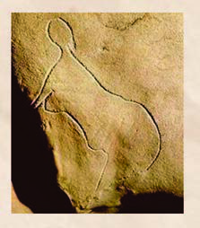<figcaption>Figure fig_ch01_p011_98 (Page 11)</figcaption></figure>
  <figure class="diagram-card" id="fig_ch01_p011_99"><figcaption>Figure fig_ch01_p011_99 (Page 11)</figcaption></figure>
  <figure class="diagram-card" id="fig_ch01_p011_100"><figcaption>Figure fig_ch01_p011_100 (Page 11)</figcaption></figure>
  <figure class="diagram-card" id="fig_ch01_p011_101"><figcaption>Figure fig_ch01_p011_101 (Page 11)</figcaption></figure>
  <figure class="diagram-card" id="fig_ch01_p011_102">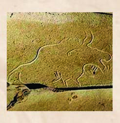<figcaption>Figure fig_ch01_p011_102 (Page 11)</figcaption></figure>
  <figure class="diagram-card" id="fig_ch01_p011_103"><figcaption>Figure fig_ch01_p011_103 (Page 11)</figcaption></figure>
  <figure class="diagram-card" id="fig_ch01_p011_104"><figcaption>Figure fig_ch01_p011_104 (Page 11)</figcaption></figure>
  <figure class="diagram-card" id="fig_ch01_p011_105"><figcaption>Figure fig_ch01_p011_105 (Page 11)</figcaption></figure>
  <figure class="diagram-card" id="fig_ch01_p011_106"><figcaption>Figure fig_ch01_p011_106 (Page 11)</figcaption></figure>
  <figure class="diagram-card" id="fig_ch01_p011_107"><figcaption>Figure fig_ch01_p011_107 (Page 11)</figcaption></figure>
  <figure class="diagram-card" id="fig_ch01_p011_108"><figcaption>Figure fig_ch01_p011_108 (Page 11)</figcaption></figure>
  <figure class="diagram-card" id="fig_ch01_p011_109"><figcaption>Figure fig_ch01_p011_109 (Page 11)</figcaption></figure>
  <figure class="diagram-card" id="fig_ch01_p011_110"><figcaption>Figure fig_ch01_p011_110 (Page 11)</figcaption></figure>
  <figure class="diagram-card" id="fig_ch01_p011_111"><figcaption>Figure fig_ch01_p011_111 (Page 11)</figcaption></figure>
  <figure class="diagram-card" id="fig_ch01_p011_112">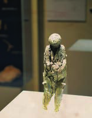<figcaption>Figure fig_ch01_p011_112 (Page 11)</figcaption></figure>
  <figure class="diagram-card" id="fig_ch01_p011_113"><figcaption>Figure fig_ch01_p011_113 (Page 11)</figcaption></figure>
  <figure class="diagram-card" id="fig_ch01_p011_114"><figcaption>Figure fig_ch01_p011_114 (Page 11)</figcaption></figure>
  <figure class="diagram-card" id="fig_ch01_p011_115">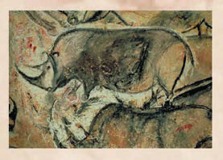<figcaption>Figure fig_ch01_p011_115 (Page 11)</figcaption></figure>
  <figure class="diagram-card" id="fig_ch01_p011_116"><figcaption>Figure fig_ch01_p011_116 (Page 11)</figcaption></figure>
  <figure class="diagram-card" id="fig_ch01_p011_117"><figcaption>Figure fig_ch01_p011_117 (Page 11)</figcaption></figure>
  <figure class="diagram-card" id="fig_ch01_p011_118"><figcaption>Figure fig_ch01_p011_118 (Page 11)</figcaption></figure>
  <figure class="diagram-card" id="fig_ch01_p011_119"><figcaption>Figure fig_ch01_p011_119 (Page 11)</figcaption></figure>
  <figure class="diagram-card" id="fig_ch01_p011_120"><figcaption>Figure fig_ch01_p011_120 (Page 11)</figcaption></figure>
  <figure class="diagram-card" id="fig_ch01_p011_121"><figcaption>Figure fig_ch01_p011_121 (Page 11)</figcaption></figure>
  <figure class="diagram-card" id="fig_ch01_p011_122"><figcaption>Figure fig_ch01_p011_122 (Page 11)</figcaption></figure>
  <figure class="diagram-card" id="fig_ch01_p011_123"><figcaption>Figure fig_ch01_p011_123 (Page 11)</figcaption></figure>
  <figure class="diagram-card" id="fig_ch01_p011_124"><figcaption>Figure fig_ch01_p011_124 (Page 11)</figcaption></figure>
  <figure class="diagram-card" id="fig_ch01_p011_125"><figcaption>Figure fig_ch01_p011_125 (Page 11)</figcaption></figure>
  <figure class="diagram-card" id="fig_ch01_p011_126"><figcaption>Figure fig_ch01_p011_126 (Page 11)</figcaption></figure>
  <figure class="diagram-card" id="fig_ch01_p011_127"><figcaption>Figure fig_ch01_p011_127 (Page 11)</figcaption></figure>
  <figure class="diagram-card" id="fig_ch01_p011_128"><figcaption>Figure fig_ch01_p011_128 (Page 11)</figcaption></figure>
  <figure class="diagram-card" id="fig_ch01_p011_129"><figcaption>Figure fig_ch01_p011_129 (Page 11)</figcaption></figure>
  <figure class="diagram-card" id="fig_ch01_p011_130"><figcaption>Figure fig_ch01_p011_130 (Page 11)</figcaption></figure>
  <figure class="diagram-card" id="fig_ch01_p011_131"><figcaption>Figure fig_ch01_p011_131 (Page 11)</figcaption></figure>
  <figure class="diagram-card" id="fig_ch01_p011_132"><figcaption>Figure fig_ch01_p011_132 (Page 11)</figcaption></figure>
  <figure class="diagram-card" id="fig_ch01_p011_133"><figcaption>Figure fig_ch01_p011_133 (Page 11)</figcaption></figure>
  <figure class="diagram-card" id="fig_ch01_p011_134"><figcaption>Figure fig_ch01_p011_134 (Page 11)</figcaption></figure>
  <figure class="diagram-card" id="fig_ch01_p011_135"><figcaption>Figure fig_ch01_p011_135 (Page 11)</figcaption></figure>
  <figure class="diagram-card" id="fig_ch01_p011_136"><figcaption>Figure fig_ch01_p011_136 (Page 11)</figcaption></figure>
  <figure class="diagram-card" id="fig_ch01_p011_137"><figcaption>Figure fig_ch01_p011_137 (Page 11)</figcaption></figure>
  <figure class="diagram-card" id="fig_ch01_p011_138"><figcaption>Figure fig_ch01_p011_138 (Page 11)</figcaption></figure>
  <figure class="diagram-card" id="fig_ch01_p011_139"><figcaption>Figure fig_ch01_p011_139 (Page 11)</figcaption></figure>
  <figure class="diagram-card" id="fig_ch01_p011_140"><figcaption>Figure fig_ch01_p011_140 (Page 11)</figcaption></figure>
  <figure class="diagram-card" id="fig_ch01_p011_141"><figcaption>Figure fig_ch01_p011_141 (Page 11)</figcaption></figure>
  <figure class="diagram-card" id="fig_ch01_p011_142"><figcaption>Figure fig_ch01_p011_142 (Page 11)</figcaption></figure>
  <figure class="diagram-card" id="fig_ch01_p011_143"><figcaption>Figure fig_ch01_p011_143 (Page 11)</figcaption></figure>
  <figure class="diagram-card" id="fig_ch01_p011_144"><figcaption>Figure fig_ch01_p011_144 (Page 11)</figcaption></figure>
  <figure class="diagram-card" id="fig_ch01_p011_145"><figcaption>Figure fig_ch01_p011_145 (Page 11)</figcaption></figure>
  <figure class="diagram-card" id="fig_ch01_p011_146"><figcaption>Figure fig_ch01_p011_146 (Page 11)</figcaption></figure>
  <figure class="diagram-card" id="fig_ch01_p011_147"><figcaption>Figure fig_ch01_p011_147 (Page 11)</figcaption></figure>
  <figure class="diagram-card" id="fig_ch01_p011_148"><figcaption>Figure fig_ch01_p011_148 (Page 11)</figcaption></figure>
  <figure class="diagram-card" id="fig_ch01_p011_149"><figcaption>Figure fig_ch01_p011_149 (Page 11)</figcaption></figure>
  <figure class="diagram-card" id="fig_ch01_p011_150"><figcaption>Figure fig_ch01_p011_150 (Page 11)</figcaption></figure>
  <figure class="diagram-card" id="fig_ch01_p011_151"><figcaption>Figure fig_ch01_p011_151 (Page 11)</figcaption></figure>
  <figure class="diagram-card" id="fig_ch01_p011_152"><figcaption>Figure fig_ch01_p011_152 (Page 11)</figcaption></figure>
  <figure class="diagram-card" id="fig_ch01_p011_153"><figcaption>Figure fig_ch01_p011_153 (Page 11)</figcaption></figure>
  <figure class="diagram-card" id="fig_ch01_p011_154"><figcaption>Figure fig_ch01_p011_154 (Page 11)</figcaption></figure>
  <figure class="diagram-card" id="fig_ch01_p011_155"><figcaption>Figure fig_ch01_p011_155 (Page 11)</figcaption></figure>
  <figure class="diagram-card" id="fig_ch01_p011_156"><figcaption>Figure fig_ch01_p011_156 (Page 11)</figcaption></figure>
  <figure class="diagram-card" id="fig_ch01_p011_157"><figcaption>Figure fig_ch01_p011_157 (Page 11)</figcaption></figure>
  <figure class="diagram-card" id="fig_ch01_p011_158"><figcaption>Figure fig_ch01_p011_158 (Page 11)</figcaption></figure>
  <figure class="diagram-card" id="fig_ch01_p011_159"><figcaption>Figure fig_ch01_p011_159 (Page 11)</figcaption></figure>
  <figure class="diagram-card" id="fig_ch01_p011_160"><figcaption>Figure fig_ch01_p011_160 (Page 11)</figcaption></figure>
  <figure class="diagram-card" id="fig_ch01_p011_161"><figcaption>Figure fig_ch01_p011_161 (Page 11)</figcaption></figure>
  <figure class="diagram-card" id="fig_ch01_p011_162"><figcaption>Figure fig_ch01_p011_162 (Page 11)</figcaption></figure>
  <figure class="diagram-card" id="fig_ch01_p011_163"><figcaption>Figure fig_ch01_p011_163 (Page 11)</figcaption></figure>
  <figure class="diagram-card" id="fig_ch01_p011_164"><figcaption>Figure fig_ch01_p011_164 (Page 11)</figcaption></figure>
  <figure class="diagram-card" id="fig_ch01_p011_165"><figcaption>Figure fig_ch01_p011_165 (Page 11)</figcaption></figure>
  <figure class="diagram-card" id="fig_ch01_p011_166"><figcaption>Figure fig_ch01_p011_166 (Page 11)</figcaption></figure>
  <figure class="diagram-card" id="fig_ch01_p011_167"><figcaption>Figure fig_ch01_p011_167 (Page 11)</figcaption></figure>
  <figure class="diagram-card" id="fig_ch01_p011_168"><figcaption>Figure fig_ch01_p011_168 (Page 11)</figcaption></figure>
  <figure class="diagram-card" id="fig_ch01_p011_169"><figcaption>Figure fig_ch01_p011_169 (Page 11)</figcaption></figure>
  <figure class="diagram-card" id="fig_ch01_p011_170"><figcaption>Figure fig_ch01_p011_170 (Page 11)</figcaption></figure>
  <figure class="diagram-card" id="fig_ch01_p011_171"><figcaption>Figure fig_ch01_p011_171 (Page 11)</figcaption></figure>
  <figure class="diagram-card" id="fig_ch01_p011_172"><figcaption>Figure fig_ch01_p011_172 (Page 11)</figcaption></figure>
  <figure class="diagram-card" id="fig_ch01_p011_173"><figcaption>Figure fig_ch01_p011_173 (Page 11)</figcaption></figure>
  <figure class="diagram-card" id="fig_ch01_p011_174"><figcaption>Figure fig_ch01_p011_174 (Page 11)</figcaption></figure>
  <figure class="diagram-card" id="fig_ch01_p011_175"><figcaption>Figure fig_ch01_p011_175 (Page 11)</figcaption></figure>
  <figure class="diagram-card" id="fig_ch01_p011_176"><figcaption>Figure fig_ch01_p011_176 (Page 11)</figcaption></figure>
  <div class="page-content">
    <p>”›šuśÆ†›ų§Œ¢ųšĞ§<br>ǢšÄ¢Å§-&lt;<br>11<br>Ƃšxœ†Œ†•DzŽ¡}sšǕǐ›s‘¡}x›Ņā‘š§Œs‘›Æ‚ų›<br>Ž›Úų‚§hx›Ņā‘›Æ†›ų§†›āÇÚ§m¡ŦƽšcŒ†ǡ›š<br>ښÄs’›ų.‘›‚Œšp’ÚēŽsÇ¢sš››Ğx›ŅāÇ<br>”›ƺāÇ ‚}ā› “›“›… ŒšÅuāÇ Ƃšxœ† ”›šuś¡ź<br>e“–š†vĞśÆ f”“›†›ŒĹ›†§ iˆ¢šu›ă›Žų‚š›<br>hx›Ņā‘›Æ†›ųcŒ†–›šÚšÄs’›cƜuā‘¡}x›Ņœ<br>sŽc ¢•š¡“ š¢ǘš u—sÇ
 Ɯuś¡źc ȼœ¡}c<br>¢sš››Ğ Žžˆc sǡšs§ u—
 “œ†–§ Ƃ‚›Œ –§ǘ§ •Dz
<br>mų›“ e†Ǒš†“Œš¢š “›”ǵš–“Œš¢š ŠŰŒǬ‚š›<br>ˆŽš“Ǚu¢“•sÅ e‹›Ƃš¡ƀ}ų ¡ǝ›†›¡ š uŌ<br>u—›Æ †›ų§ s¡Ĭś eǚ›s‘›¡ ¡sšĹˆ›sÇ<br>eښ¡ĹŒ†•DzŽ¡}sš£“„u§…Dzś†§¡‚‘›“š§<br>š¢ǘšƋšÄ–§<br>¢•š¡“ƋšÄ–§<br>f†¡ÚšƠ›Æ<br>†›Åƣ›ă ”›ƺc<br>–§ǘ§•Dz<br>sǡšs§ƋšÄ–§
u—›¡ ¢sš››Ğ<br>x›ŅāÇ<br>¡ǝ›†›¡šuŌu—s‘›Æ<br>†›ųcs¡Ĭśeǚ›s‘›¡<br>¡sšĹˆ›sÇ<br>¡sšĹˆ›<br> sÇ<br>š¢ǘšƋšÄ–§<br>¢•š¡“ƋšÄ–§<br>f†¡ÚšƠ›<br>Ơ Æ<br>†›Åƣ›ă<br>ƣ<br>”›ƺc<br>–§ǘ§•Dz<br>sǡšs§ƋšÄ–§
u—›¡<br><br>¢sš› ›<br> Ğ<br>x›<br>x ŅāÇ<br>¡ǝ›<br> †›¡<br>†<br>šuŌu—s‘<br><br>›‘ Æ<br>†›<br>† ųcs¡Ĭś<br>Ĺ eǚ›<br>ǚ s‘›¡<br>‘<br>¡sšĹˆ›<br> sÇ<br>Ƃšxœ†”›šuś¡ iˆsŽā‘¡} †›Åƣš“c<br>–š¢ÿ‚›s“‘Å㍝cmų“›•Ĺ›ÆpŽxÅă–cv}›ƀ›Ús</p>
  </div>
</section>
<section class="page-section" id="page-12">
  <div class="page-header"><span class="page-number">Page 12</span></div>
  <figure class="diagram-card" id="fig_ch01_p012_01"><figcaption>Figure fig_ch01_p012_01 (Page 12)</figcaption></figure>
  <figure class="diagram-card" id="fig_ch01_p012_02"><figcaption>Figure fig_ch01_p012_02 (Page 12)</figcaption></figure>
  <figure class="diagram-card" id="fig_ch01_p012_03"><figcaption>Figure fig_ch01_p012_03 (Page 12)</figcaption></figure>
  <figure class="diagram-card" id="fig_ch01_p012_04"><figcaption>Figure fig_ch01_p012_04 (Page 12)</figcaption></figure>
  <figure class="diagram-card" id="fig_ch01_p012_05"><figcaption>Figure fig_ch01_p012_05 (Page 12)</figcaption></figure>
  <figure class="diagram-card" id="fig_ch01_p012_06"><figcaption>Figure fig_ch01_p012_06 (Page 12)</figcaption></figure>
  <figure class="diagram-card" id="fig_ch01_p012_07"><figcaption>Figure fig_ch01_p012_07 (Page 12)</figcaption></figure>
  <figure class="diagram-card" id="fig_ch01_p012_08"><figcaption>Figure fig_ch01_p012_08 (Page 12)</figcaption></figure>
  <div class="page-content">
    <p>e…Dzšc<br>–šŒž—Dz”šȼc-<br>12<br>u—šx›ŅāÇ “ŽƩų‚›†§ “›“›…‚Žc †›āÇ iˆ¢šu›ă›Ž<br>ų¡x}›sÇŒŽĹ›¡ź¢‚š§sš§sÇmų›“eŽă§¡xÿÆ¡ƀš<br>}› ¢xÅŚ§ †›āÇ iĬšÚ››Žų‚§ –žŽDzƂsš”c mŚÄ<br>s’›šĹ u—¡} iNj›Ĺ›s‘›š§ x›ŅāÇ “Žă›Žų‚§<br>sƖžx›s‘cŒ†Ǭf…ā‘ciˆ¢šu›ăš§gŎcx›Ņ<br>āÇe“Å“Žă›Žų‚§u—s‘›¡ ¢ŒÆ‹›Ĺ›s‘›cx›ŅāÇ“Ž<br>㛎ų‚š›sššÄs’›cƂšxœ†Œ†•DzÅfÅz›ă£“蚆›s<br>“›sš–Ĺ›¡źc–š¢ÿ‚›s£“„u§…Dzś¡źc¡‚‘›“š›gŎc<br>x›Ņā‘c”›ƺā‘csÚšÚ¡ƀ}ų<br>Ƃšxœ†”›šusš¡ĹiˆsŽāÇssÇmų›“›Æ†›ųc<br>Œ†•DzŽ¡} zœ“›‚¡Ĺڝ›ăǬ m¡Ŧƽšc “›“Žā‘š§ ‹›Ú<br>ų¡‚ų§ ¢†šÚšc<br>Ƃšxœ†<br>”›šuc<br>ˆŽÚÄsƽˆsŽāÇiˆ¢šu›<br>㛎ų<br>u—s‘›c‚ǡšǚā‘›c<br>“–›ă›Žų<br>¢“Ѝš}Æ¢”tŽcmų›“f›<br>Žųiˆzœ“†ŒšÅuāÇ<br>ŠšÄsÇ ˆǯāÇ
 f›Žų<br>–Œž—Ĺ›¡źe}›ǚš†v}sc<br>ˆŽ•ŶšÅ ¢“Ѝš}›c<br>ȼœsÇ<br>¢”tŽĹ›cnÅ¡ƀĞ›Žų<br>‹äc–c‹Ž›ă“㛎ų›ƽ<br>†š¢}š}›zœ“›‚Œš§†›†›ų›Žų‚§<br>ŠšÄsÇ<br>†ž›Æ‚š¡’<br>ecuāÇ<br>iÇ¡ƀ}ų<br>¡x–Œž—ā<br>‘š§ŠšÄ<br>sÇˆǯāÇ
<br>ŽÞŠŰŒš§<br>ŠšÄ›¡<br>ecuā¡‘<br>ˆŽǝŽc<br>ŠŰ›ƀ›ă›<br>Žų‚§</p>
  </div>
</section>
<section class="page-section" id="page-13">
  <div class="page-header"><span class="page-number">Page 13</span></div>
  <figure class="diagram-card" id="fig_ch01_p013_01"><figcaption>Figure fig_ch01_p013_01 (Page 13)</figcaption></figure>
  <figure class="diagram-card" id="fig_ch01_p013_02"><figcaption>Figure fig_ch01_p013_02 (Page 13)</figcaption></figure>
  <figure class="diagram-card" id="fig_ch01_p013_03"><figcaption>Figure fig_ch01_p013_03 (Page 13)</figcaption></figure>
  <figure class="diagram-card" id="fig_ch01_p013_04"><figcaption>Figure fig_ch01_p013_04 (Page 13)</figcaption></figure>
  <figure class="diagram-card" id="fig_ch01_p013_05"><figcaption>Figure fig_ch01_p013_05 (Page 13)</figcaption></figure>
  <figure class="diagram-card" id="fig_ch01_p013_06"><figcaption>Figure fig_ch01_p013_06 (Page 13)</figcaption></figure>
  <figure class="diagram-card" id="fig_ch01_p013_07"><figcaption>Figure fig_ch01_p013_07 (Page 13)</figcaption></figure>
  <figure class="diagram-card" id="fig_ch01_p013_08"><figcaption>Figure fig_ch01_p013_08 (Page 13)</figcaption></figure>
  <figure class="diagram-card" id="fig_ch01_p013_09"><figcaption>Figure fig_ch01_p013_09 (Page 13)</figcaption></figure>
  <figure class="diagram-card" id="fig_ch01_p013_10"><figcaption>Figure fig_ch01_p013_10 (Page 13)</figcaption></figure>
  <figure class="diagram-card" id="fig_ch01_p013_11">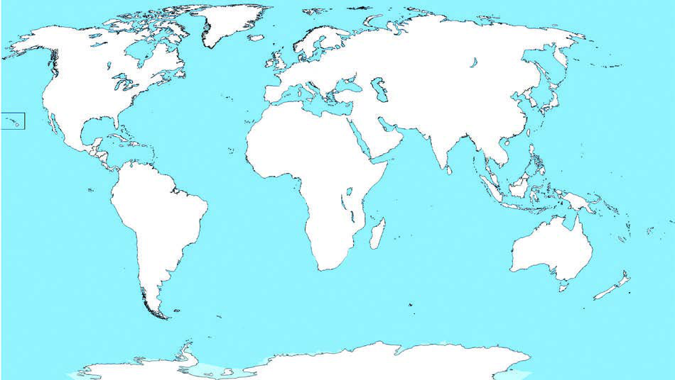<figcaption>Figure fig_ch01_p013_11 (Page 13)</figcaption></figure>
  <figure class="diagram-card" id="fig_ch01_p013_12"><figcaption>Figure fig_ch01_p013_12 (Page 13)</figcaption></figure>
  <figure class="diagram-card" id="fig_ch01_p013_13"><figcaption>Figure fig_ch01_p013_13 (Page 13)</figcaption></figure>
  <figure class="diagram-card" id="fig_ch01_p013_14">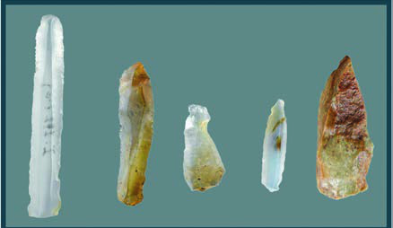<figcaption>Figure fig_ch01_p013_14 (Page 13)</figcaption></figure>
  <figure class="diagram-card" id="fig_ch01_p013_15"><figcaption>Figure fig_ch01_p013_15 (Page 13)</figcaption></figure>
  <figure class="diagram-card" id="fig_ch01_p013_16"><figcaption>Figure fig_ch01_p013_16 (Page 13)</figcaption></figure>
  <figure class="diagram-card" id="fig_ch01_p013_17"><figcaption>Figure fig_ch01_p013_17 (Page 13)</figcaption></figure>
  <figure class="diagram-card" id="fig_ch01_p013_18"><figcaption>Figure fig_ch01_p013_18 (Page 13)</figcaption></figure>
  <figure class="diagram-card" id="fig_ch01_p013_19"><figcaption>Figure fig_ch01_p013_19 (Page 13)</figcaption></figure>
  <figure class="diagram-card" id="fig_ch01_p013_20"><figcaption>Figure fig_ch01_p013_20 (Page 13)</figcaption></figure>
  <figure class="diagram-card" id="fig_ch01_p013_21"><figcaption>Figure fig_ch01_p013_21 (Page 13)</figcaption></figure>
  <div class="page-content">
    <p>”›šuśÆ†›ų§Œ¢ųšĞ§<br>ǢšÄ¢Å§-&lt;<br>13<br>Œ…Dz”›šuc(Mesolithic Age)<br>Ƃšxœ†”›šuśÆ†›ųc†“œ†”›šuś¢ÚǬˆŽ›“ÅĹ<br>†Ĺ›¡źvĞŒš§Œ…Dz”›šucÍ¡Œ¢–š–§ÎŒ…Dzc
͐›¢Ĺš–§Î”›
<br>mųœ ŽĬ ÷œÚˆ„ā‘›Æ †›ųš§ Í¡Œ¢–š›Ĺ›s§Î mų ˆ„c<br>i}¡}Ĺ‚§<br>†Æs››Ž›Úųx›Ņādž›Žœä›ÚsƂšxœ†<br>”›šuś¡ iˆsŽā‘c x›ŅśÆ<br>sšų Œ…Dz”›šuś¡ iˆsŽā‘c<br>‚ƣ›Ǭ“Dz‚Dzš–c†ŒÚ§ˆŽ›¢”š…›Úšc<br>z<br>Ƃšxœ†”›šuśÆiˆ¢šu›ă›Žų<br>“¢ÚšÇ¡x›iˆsŽā‘š§g“<br>z<br>£Œ¢âš›ĹsÇ(Microliths)eƒ“š<br>–žä§Œ”›sÇmų§“›‘›ÚųsƽˆsŽ<br>āÇiˆ¢šu›ă›ŽųsšŒš›‚§<br>f„›ŒŒ†•DzŽ¡}f”“›†›ŒĹ›¡ź“›sš–cƂšxœ†”›šu<br>ś¡źe“–š†vĞā‘›š¡ų§ŒƠ§ –žx›ƀ›ă›Žų¢ƽšmųšÆ<br>š–§¢sšu—<br>s–šs§u—<br>¢•š¡“u—<br>šuŌu—<br>–§ǘ§<br>¢šs‹žˆ}śÆ ¢Žt¡ƀ}Ĺ››Ž›Úų Ƃšxœ†”›šu ¢sůā<br>‘¡} –“›¢”•‚sÇ¢Žt¡ƀ}Ĺs<br>‹žˆ}c<br>Œ…Dz”›šuś¡iˆsŽāÇ</p>
  </div>
</section>
<section class="page-section" id="page-14">
  <div class="page-header"><span class="page-number">Page 14</span></div>
  <figure class="diagram-card" id="fig_ch01_p014_01"><figcaption>Figure fig_ch01_p014_01 (Page 14)</figcaption></figure>
  <figure class="diagram-card" id="fig_ch01_p014_02"><figcaption>Figure fig_ch01_p014_02 (Page 14)</figcaption></figure>
  <figure class="diagram-card" id="fig_ch01_p014_03"><figcaption>Figure fig_ch01_p014_03 (Page 14)</figcaption></figure>
  <figure class="diagram-card" id="fig_ch01_p014_04"><figcaption>Figure fig_ch01_p014_04 (Page 14)</figcaption></figure>
  <figure class="diagram-card" id="fig_ch01_p014_05"><figcaption>Figure fig_ch01_p014_05 (Page 14)</figcaption></figure>
  <figure class="diagram-card" id="fig_ch01_p014_06"><figcaption>Figure fig_ch01_p014_06 (Page 14)</figcaption></figure>
  <figure class="diagram-card" id="fig_ch01_p014_07"><figcaption>Figure fig_ch01_p014_07 (Page 14)</figcaption></figure>
  <figure class="diagram-card" id="fig_ch01_p014_08"><figcaption>Figure fig_ch01_p014_08 (Page 14)</figcaption></figure>
  <figure class="diagram-card" id="fig_ch01_p014_09"><figcaption>Figure fig_ch01_p014_09 (Page 14)</figcaption></figure>
  <figure class="diagram-card" id="fig_ch01_p014_10"><figcaption>Figure fig_ch01_p014_10 (Page 14)</figcaption></figure>
  <figure class="diagram-card" id="fig_ch01_p014_11">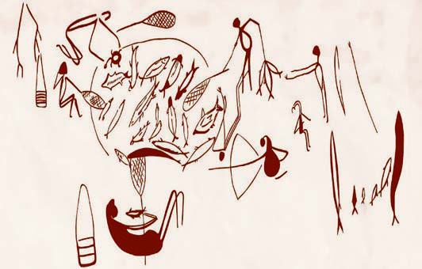<figcaption>Figure fig_ch01_p014_11 (Page 14)</figcaption></figure>
  <figure class="diagram-card" id="fig_ch01_p014_12"><figcaption>Figure fig_ch01_p014_12 (Page 14)</figcaption></figure>
  <figure class="diagram-card" id="fig_ch01_p014_13"><figcaption>Figure fig_ch01_p014_13 (Page 14)</figcaption></figure>
  <figure class="diagram-card" id="fig_ch01_p014_14"><figcaption>Figure fig_ch01_p014_14 (Page 14)</figcaption></figure>
  <figure class="diagram-card" id="fig_ch01_p014_15"><figcaption>Figure fig_ch01_p014_15 (Page 14)</figcaption></figure>
  <figure class="diagram-card" id="fig_ch01_p014_16">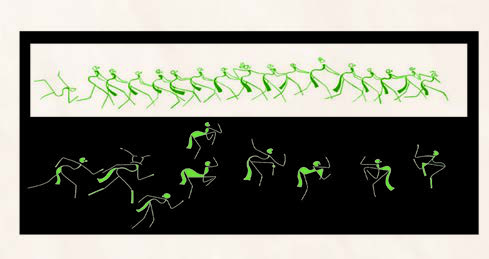<figcaption>Figure fig_ch01_p014_16 (Page 14)</figcaption></figure>
  <figure class="diagram-card" id="fig_ch01_p014_17"><figcaption>Figure fig_ch01_p014_17 (Page 14)</figcaption></figure>
  <figure class="diagram-card" id="fig_ch01_p014_18"><figcaption>Figure fig_ch01_p014_18 (Page 14)</figcaption></figure>
  <figure class="diagram-card" id="fig_ch01_p014_19"><figcaption>Figure fig_ch01_p014_19 (Page 14)</figcaption></figure>
  <figure class="diagram-card" id="fig_ch01_p014_20"><figcaption>Figure fig_ch01_p014_20 (Page 14)</figcaption></figure>
  <figure class="diagram-card" id="fig_ch01_p014_21"><figcaption>Figure fig_ch01_p014_21 (Page 14)</figcaption></figure>
  <figure class="diagram-card" id="fig_ch01_p014_22"><figcaption>Figure fig_ch01_p014_22 (Page 14)</figcaption></figure>
  <figure class="diagram-card" id="fig_ch01_p014_23"><figcaption>Figure fig_ch01_p014_23 (Page 14)</figcaption></figure>
  <figure class="diagram-card" id="fig_ch01_p014_24"><figcaption>Figure fig_ch01_p014_24 (Page 14)</figcaption></figure>
  <figure class="diagram-card" id="fig_ch01_p014_25"><figcaption>Figure fig_ch01_p014_25 (Page 14)</figcaption></figure>
  <figure class="diagram-card" id="fig_ch01_p014_26"><figcaption>Figure fig_ch01_p014_26 (Page 14)</figcaption></figure>
  <figure class="diagram-card" id="fig_ch01_p014_27"><figcaption>Figure fig_ch01_p014_27 (Page 14)</figcaption></figure>
  <figure class="diagram-card" id="fig_ch01_p014_28"><figcaption>Figure fig_ch01_p014_28 (Page 14)</figcaption></figure>
  <figure class="diagram-card" id="fig_ch01_p014_29"><figcaption>Figure fig_ch01_p014_29 (Page 14)</figcaption></figure>
  <figure class="diagram-card" id="fig_ch01_p014_30"><figcaption>Figure fig_ch01_p014_30 (Page 14)</figcaption></figure>
  <figure class="diagram-card" id="fig_ch01_p014_31"><figcaption>Figure fig_ch01_p014_31 (Page 14)</figcaption></figure>
  <figure class="diagram-card" id="fig_ch01_p014_32"><figcaption>Figure fig_ch01_p014_32 (Page 14)</figcaption></figure>
  <figure class="diagram-card" id="fig_ch01_p014_33"><figcaption>Figure fig_ch01_p014_33 (Page 14)</figcaption></figure>
  <figure class="diagram-card" id="fig_ch01_p014_34"><figcaption>Figure fig_ch01_p014_34 (Page 14)</figcaption></figure>
  <figure class="diagram-card" id="fig_ch01_p014_35"><figcaption>Figure fig_ch01_p014_35 (Page 14)</figcaption></figure>
  <figure class="diagram-card" id="fig_ch01_p014_36"><figcaption>Figure fig_ch01_p014_36 (Page 14)</figcaption></figure>
  <figure class="diagram-card" id="fig_ch01_p014_37"><figcaption>Figure fig_ch01_p014_37 (Page 14)</figcaption></figure>
  <figure class="diagram-card" id="fig_ch01_p014_38"><figcaption>Figure fig_ch01_p014_38 (Page 14)</figcaption></figure>
  <figure class="diagram-card" id="fig_ch01_p014_39"><figcaption>Figure fig_ch01_p014_39 (Page 14)</figcaption></figure>
  <figure class="diagram-card" id="fig_ch01_p014_40"><figcaption>Figure fig_ch01_p014_40 (Page 14)</figcaption></figure>
  <figure class="diagram-card" id="fig_ch01_p014_41"><figcaption>Figure fig_ch01_p014_41 (Page 14)</figcaption></figure>
  <figure class="diagram-card" id="fig_ch01_p014_42"><figcaption>Figure fig_ch01_p014_42 (Page 14)</figcaption></figure>
  <figure class="diagram-card" id="fig_ch01_p014_43"><figcaption>Figure fig_ch01_p014_43 (Page 14)</figcaption></figure>
  <figure class="diagram-card" id="fig_ch01_p014_44"><figcaption>Figure fig_ch01_p014_44 (Page 14)</figcaption></figure>
  <figure class="diagram-card" id="fig_ch01_p014_45"><figcaption>Figure fig_ch01_p014_45 (Page 14)</figcaption></figure>
  <figure class="diagram-card" id="fig_ch01_p014_46"><figcaption>Figure fig_ch01_p014_46 (Page 14)</figcaption></figure>
  <figure class="diagram-card" id="fig_ch01_p014_47"><figcaption>Figure fig_ch01_p014_47 (Page 14)</figcaption></figure>
  <figure class="diagram-card" id="fig_ch01_p014_48"><figcaption>Figure fig_ch01_p014_48 (Page 14)</figcaption></figure>
  <figure class="diagram-card" id="fig_ch01_p014_49"><figcaption>Figure fig_ch01_p014_49 (Page 14)</figcaption></figure>
  <figure class="diagram-card" id="fig_ch01_p014_50"><figcaption>Figure fig_ch01_p014_50 (Page 14)</figcaption></figure>
  <figure class="diagram-card" id="fig_ch01_p014_51"><figcaption>Figure fig_ch01_p014_51 (Page 14)</figcaption></figure>
  <figure class="diagram-card" id="fig_ch01_p014_52"><figcaption>Figure fig_ch01_p014_52 (Page 14)</figcaption></figure>
  <figure class="diagram-card" id="fig_ch01_p014_53">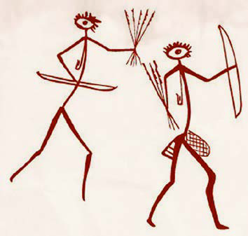<figcaption>Figure fig_ch01_p014_53 (Page 14)</figcaption></figure>
  <figure class="diagram-card" id="fig_ch01_p014_54"><figcaption>Figure fig_ch01_p014_54 (Page 14)</figcaption></figure>
  <figure class="diagram-card" id="fig_ch01_p014_55"><figcaption>Figure fig_ch01_p014_55 (Page 14)</figcaption></figure>
  <figure class="diagram-card" id="fig_ch01_p014_56"><figcaption>Figure fig_ch01_p014_56 (Page 14)</figcaption></figure>
  <figure class="diagram-card" id="fig_ch01_p014_57"><figcaption>Figure fig_ch01_p014_57 (Page 14)</figcaption></figure>
  <figure class="diagram-card" id="fig_ch01_p014_58"><figcaption>Figure fig_ch01_p014_58 (Page 14)</figcaption></figure>
  <figure class="diagram-card" id="fig_ch01_p014_59"><figcaption>Figure fig_ch01_p014_59 (Page 14)</figcaption></figure>
  <figure class="diagram-card" id="fig_ch01_p014_60"><figcaption>Figure fig_ch01_p014_60 (Page 14)</figcaption></figure>
  <figure class="diagram-card" id="fig_ch01_p014_61"><figcaption>Figure fig_ch01_p014_61 (Page 14)</figcaption></figure>
  <figure class="diagram-card" id="fig_ch01_p014_62"><figcaption>Figure fig_ch01_p014_62 (Page 14)</figcaption></figure>
  <figure class="diagram-card" id="fig_ch01_p014_63"><figcaption>Figure fig_ch01_p014_63 (Page 14)</figcaption></figure>
  <figure class="diagram-card" id="fig_ch01_p014_64"><figcaption>Figure fig_ch01_p014_64 (Page 14)</figcaption></figure>
  <figure class="diagram-card" id="fig_ch01_p014_65"><figcaption>Figure fig_ch01_p014_65 (Page 14)</figcaption></figure>
  <figure class="diagram-card" id="fig_ch01_p014_66"><figcaption>Figure fig_ch01_p014_66 (Page 14)</figcaption></figure>
  <figure class="diagram-card" id="fig_ch01_p014_67"><figcaption>Figure fig_ch01_p014_67 (Page 14)</figcaption></figure>
  <figure class="diagram-card" id="fig_ch01_p014_68"><figcaption>Figure fig_ch01_p014_68 (Page 14)</figcaption></figure>
  <figure class="diagram-card" id="fig_ch01_p014_69"><figcaption>Figure fig_ch01_p014_69 (Page 14)</figcaption></figure>
  <figure class="diagram-card" id="fig_ch01_p014_70"><figcaption>Figure fig_ch01_p014_70 (Page 14)</figcaption></figure>
  <figure class="diagram-card" id="fig_ch01_p014_71"><figcaption>Figure fig_ch01_p014_71 (Page 14)</figcaption></figure>
  <figure class="diagram-card" id="fig_ch01_p014_72"><figcaption>Figure fig_ch01_p014_72 (Page 14)</figcaption></figure>
  <figure class="diagram-card" id="fig_ch01_p014_73"><figcaption>Figure fig_ch01_p014_73 (Page 14)</figcaption></figure>
  <figure class="diagram-card" id="fig_ch01_p014_74"><figcaption>Figure fig_ch01_p014_74 (Page 14)</figcaption></figure>
  <figure class="diagram-card" id="fig_ch01_p014_75"><figcaption>Figure fig_ch01_p014_75 (Page 14)</figcaption></figure>
  <figure class="diagram-card" id="fig_ch01_p014_76"><figcaption>Figure fig_ch01_p014_76 (Page 14)</figcaption></figure>
  <figure class="diagram-card" id="fig_ch01_p014_77"><figcaption>Figure fig_ch01_p014_77 (Page 14)</figcaption></figure>
  <figure class="diagram-card" id="fig_ch01_p014_78"><figcaption>Figure fig_ch01_p014_78 (Page 14)</figcaption></figure>
  <figure class="diagram-card" id="fig_ch01_p014_79"><figcaption>Figure fig_ch01_p014_79 (Page 14)</figcaption></figure>
  <figure class="diagram-card" id="fig_ch01_p014_80"><figcaption>Figure fig_ch01_p014_80 (Page 14)</figcaption></figure>
  <figure class="diagram-card" id="fig_ch01_p014_81"><figcaption>Figure fig_ch01_p014_81 (Page 14)</figcaption></figure>
  <figure class="diagram-card" id="fig_ch01_p014_82"><figcaption>Figure fig_ch01_p014_82 (Page 14)</figcaption></figure>
  <figure class="diagram-card" id="fig_ch01_p014_83"><figcaption>Figure fig_ch01_p014_83 (Page 14)</figcaption></figure>
  <figure class="diagram-card" id="fig_ch01_p014_84"><figcaption>Figure fig_ch01_p014_84 (Page 14)</figcaption></figure>
  <figure class="diagram-card" id="fig_ch01_p014_85"><figcaption>Figure fig_ch01_p014_85 (Page 14)</figcaption></figure>
  <figure class="diagram-card" id="fig_ch01_p014_86"><figcaption>Figure fig_ch01_p014_86 (Page 14)</figcaption></figure>
  <figure class="diagram-card" id="fig_ch01_p014_87"><figcaption>Figure fig_ch01_p014_87 (Page 14)</figcaption></figure>
  <figure class="diagram-card" id="fig_ch01_p014_88"><figcaption>Figure fig_ch01_p014_88 (Page 14)</figcaption></figure>
  <figure class="diagram-card" id="fig_ch01_p014_89"><figcaption>Figure fig_ch01_p014_89 (Page 14)</figcaption></figure>
  <figure class="diagram-card" id="fig_ch01_p014_90"><figcaption>Figure fig_ch01_p014_90 (Page 14)</figcaption></figure>
  <figure class="diagram-card" id="fig_ch01_p014_91"><figcaption>Figure fig_ch01_p014_91 (Page 14)</figcaption></figure>
  <figure class="diagram-card" id="fig_ch01_p014_92"><figcaption>Figure fig_ch01_p014_92 (Page 14)</figcaption></figure>
  <figure class="diagram-card" id="fig_ch01_p014_93"><figcaption>Figure fig_ch01_p014_93 (Page 14)</figcaption></figure>
  <figure class="diagram-card" id="fig_ch01_p014_94"><figcaption>Figure fig_ch01_p014_94 (Page 14)</figcaption></figure>
  <figure class="diagram-card" id="fig_ch01_p014_95"><figcaption>Figure fig_ch01_p014_95 (Page 14)</figcaption></figure>
  <figure class="diagram-card" id="fig_ch01_p014_96"><figcaption>Figure fig_ch01_p014_96 (Page 14)</figcaption></figure>
  <div class="page-content">
    <p>e…Dzšc<br>–šŒž—Dz”šȼc-<br>14<br>gŦDz›Æ Ƃ…š†Œšc h “›sš–c †ŒÚ§ sššÄ s’›ų‚§<br>Œ…Dz”›šuśš§ Œ…DzƂ¢„”›¡ ‹›c¢Š§s t§zš¢“šÅ<br>s¢ƒšĞ›mųœu—š¢sůā‘›¡sšǕǐ›sÇf„›ŒŒ†•Dz¡ź<br>zœ“›‚Žœ‚›sÇŒ†ǡ›šÚšÄ–—š›ÚųĬ§<br>‹›c¢Š§s<br>t§zš¢“šÅ<br>s¢ƒšĞ›<br>t§zš¢“šÅ<br>t§zš¢“šÅ<br>‹›c¢Š§s<br>‹›c¢Š§s<br><br>t§zš¢“šÅ<br>s¢ƒšĞ›Ğ <br>t§zš¢“šÅ<br>tzš<br>t§zš¢“š<br>¢“šÅ<br>‹›c¢Š§s<br></p>
  </div>
</section>
<section class="page-section" id="page-15">
  <div class="page-header"><span class="page-number">Page 15</span></div>
  <figure class="diagram-card" id="fig_ch01_p015_01"><figcaption>Figure fig_ch01_p015_01 (Page 15)</figcaption></figure>
  <figure class="diagram-card" id="fig_ch01_p015_02"><figcaption>Figure fig_ch01_p015_02 (Page 15)</figcaption></figure>
  <figure class="diagram-card" id="fig_ch01_p015_03"><figcaption>Figure fig_ch01_p015_03 (Page 15)</figcaption></figure>
  <figure class="diagram-card" id="fig_ch01_p015_04"><figcaption>Figure fig_ch01_p015_04 (Page 15)</figcaption></figure>
  <figure class="diagram-card" id="fig_ch01_p015_05"><figcaption>Figure fig_ch01_p015_05 (Page 15)</figcaption></figure>
  <figure class="diagram-card" id="fig_ch01_p015_06"><figcaption>Figure fig_ch01_p015_06 (Page 15)</figcaption></figure>
  <figure class="diagram-card" id="fig_ch01_p015_07"><figcaption>Figure fig_ch01_p015_07 (Page 15)</figcaption></figure>
  <figure class="diagram-card" id="fig_ch01_p015_08"><figcaption>Figure fig_ch01_p015_08 (Page 15)</figcaption></figure>
  <div class="page-content">
    <p>”›šuśÆ†›ų§Œ¢ųšĞ§<br>ǢšÄ¢Å§-&lt;<br>15<br>h x›ŅĹ›Æ†›ų§ Œ…Dz”›šuś¡ Œ†•DzŽ¡} zœ“›‚Žœ‚›<br>s¡‘ƀǯ› †ŒÚ§Œ†ǡ›šÚšÄs’›ųĬ§hsšvĞś¡ź–“›<br>¢”•‚sÇx“¡}†Æsų<br>z<br>£Œ¢âš›ĹsÇeƒ“š–žä§Œ”›š…ā‘¡}iˆ¢šuc<br>z<br>¢“Ѝš}›†c¢”tŽĹ›†cˆ¡ŒŒœÄˆ›}Ĺ“ciˆzœ“†<br>ŒšÅuŒšÚ›<br>z<br>Ɯuā¡‘gÚ›“‘Å՛¡ź–žx†sÇ<br>z<br>“›¢†š„āÇ<br>z<br>›cuš}›ǚš†Ĺ›Ǭ¡‚š’›Æ“›‹z†c<br>x›ŅāÇ †œŽ›ä›ă§ e“ Ƃšxœ†Œ†•Dz¡ź n¡‚ƽšc zœ“œ‚Žcuā¡‘š§<br>x›ŅœsŽ›ă›Ž›Úų¡‚ų§ˆĞ›s¡ƀ}Ĺs<br><br>z ¢“Ѝš}Æ <br><br>z<br><br><br>z<br><br><br><br>z<br><br><br>z<br><br><br><br>z<br>Œ…Dz”›šu¢sůāÇ<br>ǢšÅsšÅ<br>‰š—›šÄu—<br>–£Ž†—ŏš§<br>gcøĬ§<br>Njœÿ<br>gŦDziĹÅƂ¢„”§
<br>ǢšÅsšÅž¢šƀ›¡Œ…Dz”›šu¢sůc<br>“}ڝs›’ÚÄgcøĬ›Æs¡ĬśŒ…Dz”›šuś¡pŽ‚ǡše…›“š–<br>¢sůŒš›‚§£z“e“”›ǐā‘¡}–šų›…DzŒš§h¢sůś¡źƂ…š†–“›<br>¢”•‚”›sÇ¡sšĬceǚ›sÇ¡sšĬc †›Åƣ›ăiˆsŽāÇg“›¡}†›ų§<br>s¡Ĭś›<br>НĬ§ f„Dz<br>sšŒŽƀ›<br>¡}¡‚‘›“<br>s‘cg“›¡}<br>†›ų§ ‹›ă›<br>НĬ§f„›Œ<br>Œ†•DzÅh<br>Ƃ¢„”¡Ĺ<br>‚šÆښ›s<br>“š–ǚŒš›<br>iˆ¢šu›ă›Ž<br>ų¡“ų§ sŽ<br>‚¡ƀ}ų</p>
  </div>
</section>
<section class="page-section" id="page-16">
  <div class="page-header"><span class="page-number">Page 16</span></div>
  <figure class="diagram-card" id="fig_ch01_p016_01"><figcaption>Figure fig_ch01_p016_01 (Page 16)</figcaption></figure>
  <figure class="diagram-card" id="fig_ch01_p016_02"><figcaption>Figure fig_ch01_p016_02 (Page 16)</figcaption></figure>
  <figure class="diagram-card" id="fig_ch01_p016_03"><figcaption>Figure fig_ch01_p016_03 (Page 16)</figcaption></figure>
  <figure class="diagram-card" id="fig_ch01_p016_04"><figcaption>Figure fig_ch01_p016_04 (Page 16)</figcaption></figure>
  <figure class="diagram-card" id="fig_ch01_p016_05"><figcaption>Figure fig_ch01_p016_05 (Page 16)</figcaption></figure>
  <figure class="diagram-card" id="fig_ch01_p016_06"><figcaption>Figure fig_ch01_p016_06 (Page 16)</figcaption></figure>
  <figure class="diagram-card" id="fig_ch01_p016_07"><figcaption>Figure fig_ch01_p016_07 (Page 16)</figcaption></figure>
  <figure class="diagram-card" id="fig_ch01_p016_08"><figcaption>Figure fig_ch01_p016_08 (Page 16)</figcaption></figure>
  <figure class="diagram-card" id="fig_ch01_p016_09"><figcaption>Figure fig_ch01_p016_09 (Page 16)</figcaption></figure>
  <figure class="diagram-card" id="fig_ch01_p016_10"><figcaption>Figure fig_ch01_p016_10 (Page 16)</figcaption></figure>
  <figure class="diagram-card" id="fig_ch01_p016_11"><figcaption>Figure fig_ch01_p016_11 (Page 16)</figcaption></figure>
  <figure class="diagram-card" id="fig_ch01_p016_12"><figcaption>Figure fig_ch01_p016_12 (Page 16)</figcaption></figure>
  <figure class="diagram-card" id="fig_ch01_p016_13"><figcaption>Figure fig_ch01_p016_13 (Page 16)</figcaption></figure>
  <figure class="diagram-card" id="fig_ch01_p016_14"><figcaption>Figure fig_ch01_p016_14 (Page 16)</figcaption></figure>
  <figure class="diagram-card" id="fig_ch01_p016_15"><figcaption>Figure fig_ch01_p016_15 (Page 16)</figcaption></figure>
  <figure class="diagram-card" id="fig_ch01_p016_16"><figcaption>Figure fig_ch01_p016_16 (Page 16)</figcaption></figure>
  <figure class="diagram-card" id="fig_ch01_p016_17"><figcaption>Figure fig_ch01_p016_17 (Page 16)</figcaption></figure>
  <figure class="diagram-card" id="fig_ch01_p016_18"><figcaption>Figure fig_ch01_p016_18 (Page 16)</figcaption></figure>
  <figure class="diagram-card" id="fig_ch01_p016_19"><figcaption>Figure fig_ch01_p016_19 (Page 16)</figcaption></figure>
  <figure class="diagram-card" id="fig_ch01_p016_20"><figcaption>Figure fig_ch01_p016_20 (Page 16)</figcaption></figure>
  <figure class="diagram-card" id="fig_ch01_p016_21"><figcaption>Figure fig_ch01_p016_21 (Page 16)</figcaption></figure>
  <figure class="diagram-card" id="fig_ch01_p016_22"><figcaption>Figure fig_ch01_p016_22 (Page 16)</figcaption></figure>
  <div class="page-content">
    <p>e…Dzšc<br>–šŒž—Dz”šȼc-<br>16<br>†“œ†”›šuc(Neolithic Age)<br>Œ†•Dzzœ“›‚Ĺ›Æ –ŒžŒš Œšǯś†§ ‚}Úcs›ă sšŒš›‚§<br>͆›¢š–§Î †“œ†c
 ͐›¢Ĺš–§Î ”›
 mųœ ˆ„ā‘›Æ †›ųŒš§<br>͆›¢š›Ĺ›Ú§Îmųˆ„cŽžˆc¡sšĬ‚§ŒšÄ¢Œs§–§—›c¡–Ɖ§<br>Œ†•DZÄ–Ǵc †›Åƣ›Úų
mų÷ŪśÆ¢ušÅÄ£xƧ<br>Œ†•Dzzœ“›‚¡Ĺ Œšǯ›Œ›ă†“œ†”›šuś¡ ŽĬ–Ƃ…š†Œš<br>ǯā¡‘ –žx›ƀ›Úų‚§gā¡†š§<br>    Œ†•DZ –Ơ„§“DZ“Ǚ¡ f¡s ŒšǮ›Œ›ă f„DZ“›ƃ“c Œ†•DZ†§ ‚¡ź<br>‹ä‹DZ‚›¢ŶÆ †›ũc ¢†}›¡Úš}Ĺ ‹äDZ¢šuDZŒš ¡x}›s‘c<br>¢“Žs‘cƽäā‘c ‚›Ž¡Ě}Ĺ§†}š†cՕ›¡xƭš†c¡Œă¡ƀ}Ĺš†c<br>‚}ā›  ‚†›Ú§ †ÆsšÄ –š…›Úų sųsš›ĹœǮ¡}c ¡sš}ÚšÄ<br>s’›ų –cŽäĹ›¡źc ¡xĹš“ų „œÅvőǏ›¡}c ‰Œš›<br>Ƃ¢‚DZs Ɯuā¡‘ŒšŅc<br>¡ŒŽÚ›¡}Ĺ§ gÚ›†›Åŝų‚›Æ Œ†•DZÄ<br>“›z›ă¢ŒƹĚ ŽĬsšŽDZā‘cˆŽǜŽcg’¢xÅų“š§<br>h“›“ŽĹ›Æ†“œ†”›šuśĬšn¡‚š¡Ú Œšǯā‘š§<br>Ƃ‚›ˆš„›Úų‚§?<br><br>z<br><br>z<br>xǯˆš}s‘ŒšǬ Œ†•Dz¡ź g}¡ˆ}›Æ “ų ŒšǯŒš§ g‚›†§<br>e}›ǚš†Œš‚§†“œ† ”›šuśÆˆ‚›iˆzœ“†Žœ‚›sÇÚ§<br>Œ†•DzÅ‚}Úcs›ăe“ x“¡} †Æsų<br>Ƃšxœ†”›šuś¡c Œ…Dz”›šuś¡c Œ†•Dzzœ“›‚<br>ś¡ “Dz‚Dzš–āLjЛs¡ƀ}Ĺs<br>–£Ž†—ŏš§gŦDz›¡pŽŒ…Dz”›šu¢sůc<br>iĹÅƂ¢„”›¡ Ƃ‚šˆ§†uÅ z›ƽ›Æ qs§–§¢Šš ‚}šsڎ›š§ –£Ž†—ŏš§<br>ǚ›‚›¡xƮų‚§ Œ…Dz”›šuś¡ź Ƃ…š†<br>–“›¢”•‚š £Œ¢âš›ĹsÇ<br>g“›¡} †›ų§ s¡Ĭś›ĞĬ§ g“›¡} †›ų§ ‹›ă iŽŒǬ Œ†•DzŽ¡} eǚ›sÇ<br>“‘¡ŽƂ…š†¡ƀЈŽš“Ǚ¡Ĺ‘›“š§g‚›ÆˆŽ•ŶšŽ¡}iŽc180 ¡–ź›Œœǯc<br>ȼœs‘¡}iŽc170 ¡–ź›ŒœǯŒš§¢“Ѝš}›†§eƠc “›ƽciˆ¢šu›ă›Žų‚š›<br>sŽ‚ų “›ĹsÇ ¢”tŽ›Úsc –c‹Ž›Úsc ¡xƫ›Žų‚›†c Ɯu¢ĹšsÇ<br>“ȼā‘š›iˆ¢šu›ă›Žų‚›†c¡‚‘›“Ĭ§</p>
  </div>
</section>
<section class="page-section" id="page-17">
  <div class="page-header"><span class="page-number">Page 17</span></div>
  <figure class="diagram-card" id="fig_ch01_p017_01"><figcaption>Figure fig_ch01_p017_01 (Page 17)</figcaption></figure>
  <figure class="diagram-card" id="fig_ch01_p017_02"><figcaption>Figure fig_ch01_p017_02 (Page 17)</figcaption></figure>
  <figure class="diagram-card" id="fig_ch01_p017_03"><figcaption>Figure fig_ch01_p017_03 (Page 17)</figcaption></figure>
  <figure class="diagram-card" id="fig_ch01_p017_04"><figcaption>Figure fig_ch01_p017_04 (Page 17)</figcaption></figure>
  <figure class="diagram-card" id="fig_ch01_p017_05"><figcaption>Figure fig_ch01_p017_05 (Page 17)</figcaption></figure>
  <figure class="diagram-card" id="fig_ch01_p017_06"><figcaption>Figure fig_ch01_p017_06 (Page 17)</figcaption></figure>
  <figure class="diagram-card" id="fig_ch01_p017_07"><figcaption>Figure fig_ch01_p017_07 (Page 17)</figcaption></figure>
  <figure class="diagram-card" id="fig_ch01_p017_08">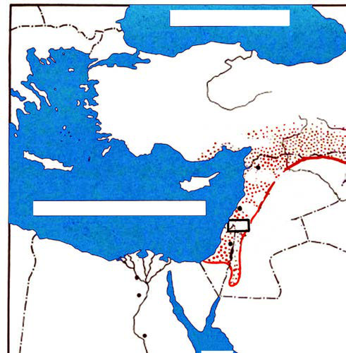<figcaption>Figure fig_ch01_p017_08 (Page 17)</figcaption></figure>
  <figure class="diagram-card" id="fig_ch01_p017_09">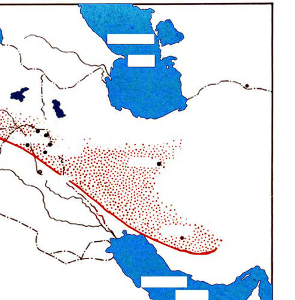<figcaption>Figure fig_ch01_p017_09 (Page 17)</figcaption></figure>
  <figure class="diagram-card" id="fig_ch01_p017_10">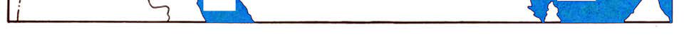<figcaption>Figure fig_ch01_p017_10 (Page 17)</figcaption></figure>
  <div class="page-content">
    <p>”›šuśÆ†›ų§Œ¢ųšĞ§<br>ǢšÄ¢Å§-&lt;<br>17<br>gšt§<br>e¢ŠDz<br>–››<br>‚Åڛ<br>÷œ–§<br>sŽ›ÿ}Æ<br>hz›ž§<br>¡xÿ}Æ<br>¡xÿ}Æ<br>¡Œ›ǯ¢†›Äs}Æ<br>¢ˆÅ•DzÄ<br>¢ˆÅ•DzÄ<br>sšǝ›Ä<br>sšǝ›Ä<br>s}Æ<br>s}›}Ú§<br>s}›}Ú§<br>gšÄ<br>¡Œ›cw§<br>¡z›¢Úš<br>†šĹ‰›Ä<br>–Œš<br>zšÅ¢Œš<br>—ǡž†<br>–š“›¡sŒ›<br>—uš§–§<br>¡Œǯ›‰šǯ§<br>sŽœc•š—›Å<br>–ÆÚ§<br>e†­<br>ŠsžÄ<br>Š›¢Ɨš–§<br>z›¡„<br>¡ŒÅ–›Ä<br>‰c<br>ǯš–<br>‹žˆ}c<br>‹žˆ}c†›Žœä›Úžxůڐ¡}fՂ››Æ¢Žt¡ƀ}Ĺ›Ƃ¢„”c<br>sššŒ¢ƽš‹DzŒš¡‚‘›“s‘¡}e}›ǚš†Ĺ›ÆhƂ¢„”Ĺš§<br>Օ›¡} fŽc‹¡Œų§ ˆŽš“Ǚ u¢“•sÅ ˆų Í¡‰ÅЍ›Æ<br>▼§Î‰‹ž›ǑŒšxůڐ
mųš§hƂ¢„”¡Ĺ“›¢”•›<br>ƀ›Úų‚§ h Ƃ¢„”c gų§ n¡‚š¡Ú ŽšzDzā‘¡} ‹šuŒš¡ų§<br>s¡ĬŚ¢Œš?<br>Ɯuā¡‘ gÚ›“‘ÅŚ†c Օ› fŽc‹›Ú“š†c Œ†•Dz¡Ž<br>¢ƂŽ›ƀ›ăv}sāÇm¡ŦƽšŒš›Ž›Ú¡Œų§ †ŒÚ§ ¢†šÚšc<br>z†–ctDzš“Å…†“§<br>Œ†•Dzš…›“š–¢sůā‘¡}<br>mĴśĬš“Å…†<br>–ÿœÅĴŒš–šŒž—›s–cvš}†c<br>‹¢•DzšÆˆųā‘¡}‹Dz‚ڝ“§<br>–š¢ÿ‚›s“›„Dz›Æ“ųŒšǯc<br>z<br>Ɯuā¡‘gÚ›“‘ÅĹÆ<br>z<br>Օ›¡}fŽc‹c<br>ST-203-2-SOC. SCI-I (M)-9-VOL-1</p>
  </div>
</section>
<section class="page-section" id="page-18">
  <div class="page-header"><span class="page-number">Page 18</span></div>
  <figure class="diagram-card" id="fig_ch01_p018_01"><figcaption>Figure fig_ch01_p018_01 (Page 18)</figcaption></figure>
  <figure class="diagram-card" id="fig_ch01_p018_02"><figcaption>Figure fig_ch01_p018_02 (Page 18)</figcaption></figure>
  <figure class="diagram-card" id="fig_ch01_p018_03"><figcaption>Figure fig_ch01_p018_03 (Page 18)</figcaption></figure>
  <figure class="diagram-card" id="fig_ch01_p018_04"><figcaption>Figure fig_ch01_p018_04 (Page 18)</figcaption></figure>
  <figure class="diagram-card" id="fig_ch01_p018_05"><figcaption>Figure fig_ch01_p018_05 (Page 18)</figcaption></figure>
  <figure class="diagram-card" id="fig_ch01_p018_06"><figcaption>Figure fig_ch01_p018_06 (Page 18)</figcaption></figure>
  <figure class="diagram-card" id="fig_ch01_p018_07"><figcaption>Figure fig_ch01_p018_07 (Page 18)</figcaption></figure>
  <figure class="diagram-card" id="fig_ch01_p018_08"><figcaption>Figure fig_ch01_p018_08 (Page 18)</figcaption></figure>
  <figure class="diagram-card" id="fig_ch01_p018_09"><figcaption>Figure fig_ch01_p018_09 (Page 18)</figcaption></figure>
  <figure class="diagram-card" id="fig_ch01_p018_10"><figcaption>Figure fig_ch01_p018_10 (Page 18)</figcaption></figure>
  <figure class="diagram-card" id="fig_ch01_p018_11"><figcaption>Figure fig_ch01_p018_11 (Page 18)</figcaption></figure>
  <figure class="diagram-card" id="fig_ch01_p018_12"><figcaption>Figure fig_ch01_p018_12 (Page 18)</figcaption></figure>
  <figure class="diagram-card" id="fig_ch01_p018_13"><figcaption>Figure fig_ch01_p018_13 (Page 18)</figcaption></figure>
  <figure class="diagram-card" id="fig_ch01_p018_14"><figcaption>Figure fig_ch01_p018_14 (Page 18)</figcaption></figure>
  <figure class="diagram-card" id="fig_ch01_p018_15"><figcaption>Figure fig_ch01_p018_15 (Page 18)</figcaption></figure>
  <figure class="diagram-card" id="fig_ch01_p018_16"><figcaption>Figure fig_ch01_p018_16 (Page 18)</figcaption></figure>
  <figure class="diagram-card" id="fig_ch01_p018_17"><figcaption>Figure fig_ch01_p018_17 (Page 18)</figcaption></figure>
  <figure class="diagram-card" id="fig_ch01_p018_18"><figcaption>Figure fig_ch01_p018_18 (Page 18)</figcaption></figure>
  <figure class="diagram-card" id="fig_ch01_p018_19">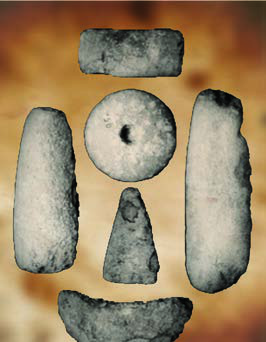<figcaption>Figure fig_ch01_p018_19 (Page 18)</figcaption></figure>
  <figure class="diagram-card" id="fig_ch01_p018_20"><figcaption>Figure fig_ch01_p018_20 (Page 18)</figcaption></figure>
  <figure class="diagram-card" id="fig_ch01_p018_21"><figcaption>Figure fig_ch01_p018_21 (Page 18)</figcaption></figure>
  <figure class="diagram-card" id="fig_ch01_p018_22"><figcaption>Figure fig_ch01_p018_22 (Page 18)</figcaption></figure>
  <figure class="diagram-card" id="fig_ch01_p018_23"><figcaption>Figure fig_ch01_p018_23 (Page 18)</figcaption></figure>
  <figure class="diagram-card" id="fig_ch01_p018_24"><figcaption>Figure fig_ch01_p018_24 (Page 18)</figcaption></figure>
  <figure class="diagram-card" id="fig_ch01_p018_25">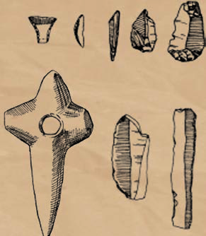<figcaption>Figure fig_ch01_p018_25 (Page 18)</figcaption></figure>
  <figure class="diagram-card" id="fig_ch01_p018_26"><figcaption>Figure fig_ch01_p018_26 (Page 18)</figcaption></figure>
  <figure class="diagram-card" id="fig_ch01_p018_27"><figcaption>Figure fig_ch01_p018_27 (Page 18)</figcaption></figure>
  <figure class="diagram-card" id="fig_ch01_p018_28"><figcaption>Figure fig_ch01_p018_28 (Page 18)</figcaption></figure>
  <figure class="diagram-card" id="fig_ch01_p018_29"><figcaption>Figure fig_ch01_p018_29 (Page 18)</figcaption></figure>
  <figure class="diagram-card" id="fig_ch01_p018_30"><figcaption>Figure fig_ch01_p018_30 (Page 18)</figcaption></figure>
  <figure class="diagram-card" id="fig_ch01_p018_31"><figcaption>Figure fig_ch01_p018_31 (Page 18)</figcaption></figure>
  <figure class="diagram-card" id="fig_ch01_p018_32"><figcaption>Figure fig_ch01_p018_32 (Page 18)</figcaption></figure>
  <figure class="diagram-card" id="fig_ch01_p018_33"><figcaption>Figure fig_ch01_p018_33 (Page 18)</figcaption></figure>
  <figure class="diagram-card" id="fig_ch01_p018_34"><figcaption>Figure fig_ch01_p018_34 (Page 18)</figcaption></figure>
  <figure class="diagram-card" id="fig_ch01_p018_35"><figcaption>Figure fig_ch01_p018_35 (Page 18)</figcaption></figure>
  <figure class="diagram-card" id="fig_ch01_p018_36"><figcaption>Figure fig_ch01_p018_36 (Page 18)</figcaption></figure>
  <figure class="diagram-card" id="fig_ch01_p018_37"><figcaption>Figure fig_ch01_p018_37 (Page 18)</figcaption></figure>
  <figure class="diagram-card" id="fig_ch01_p018_38"><figcaption>Figure fig_ch01_p018_38 (Page 18)</figcaption></figure>
  <figure class="diagram-card" id="fig_ch01_p018_39"><figcaption>Figure fig_ch01_p018_39 (Page 18)</figcaption></figure>
  <figure class="diagram-card" id="fig_ch01_p018_40"><figcaption>Figure fig_ch01_p018_40 (Page 18)</figcaption></figure>
  <figure class="diagram-card" id="fig_ch01_p018_41"><figcaption>Figure fig_ch01_p018_41 (Page 18)</figcaption></figure>
  <figure class="diagram-card" id="fig_ch01_p018_42"><figcaption>Figure fig_ch01_p018_42 (Page 18)</figcaption></figure>
  <figure class="diagram-card" id="fig_ch01_p018_43"><figcaption>Figure fig_ch01_p018_43 (Page 18)</figcaption></figure>
  <figure class="diagram-card" id="fig_ch01_p018_44"><figcaption>Figure fig_ch01_p018_44 (Page 18)</figcaption></figure>
  <figure class="diagram-card" id="fig_ch01_p018_45"><figcaption>Figure fig_ch01_p018_45 (Page 18)</figcaption></figure>
  <figure class="diagram-card" id="fig_ch01_p018_46"><figcaption>Figure fig_ch01_p018_46 (Page 18)</figcaption></figure>
  <figure class="diagram-card" id="fig_ch01_p018_47"><figcaption>Figure fig_ch01_p018_47 (Page 18)</figcaption></figure>
  <figure class="diagram-card" id="fig_ch01_p018_48"><figcaption>Figure fig_ch01_p018_48 (Page 18)</figcaption></figure>
  <figure class="diagram-card" id="fig_ch01_p018_49"><figcaption>Figure fig_ch01_p018_49 (Page 18)</figcaption></figure>
  <figure class="diagram-card" id="fig_ch01_p018_50"><figcaption>Figure fig_ch01_p018_50 (Page 18)</figcaption></figure>
  <figure class="diagram-card" id="fig_ch01_p018_51"><figcaption>Figure fig_ch01_p018_51 (Page 18)</figcaption></figure>
  <figure class="diagram-card" id="fig_ch01_p018_52"><figcaption>Figure fig_ch01_p018_52 (Page 18)</figcaption></figure>
  <figure class="diagram-card" id="fig_ch01_p018_53"><figcaption>Figure fig_ch01_p018_53 (Page 18)</figcaption></figure>
  <figure class="diagram-card" id="fig_ch01_p018_54"><figcaption>Figure fig_ch01_p018_54 (Page 18)</figcaption></figure>
  <figure class="diagram-card" id="fig_ch01_p018_55"><figcaption>Figure fig_ch01_p018_55 (Page 18)</figcaption></figure>
  <figure class="diagram-card" id="fig_ch01_p018_56"><figcaption>Figure fig_ch01_p018_56 (Page 18)</figcaption></figure>
  <figure class="diagram-card" id="fig_ch01_p018_57"><figcaption>Figure fig_ch01_p018_57 (Page 18)</figcaption></figure>
  <figure class="diagram-card" id="fig_ch01_p018_58"><figcaption>Figure fig_ch01_p018_58 (Page 18)</figcaption></figure>
  <figure class="diagram-card" id="fig_ch01_p018_59"><figcaption>Figure fig_ch01_p018_59 (Page 18)</figcaption></figure>
  <figure class="diagram-card" id="fig_ch01_p018_60"><figcaption>Figure fig_ch01_p018_60 (Page 18)</figcaption></figure>
  <figure class="diagram-card" id="fig_ch01_p018_61"><figcaption>Figure fig_ch01_p018_61 (Page 18)</figcaption></figure>
  <figure class="diagram-card" id="fig_ch01_p018_62"><figcaption>Figure fig_ch01_p018_62 (Page 18)</figcaption></figure>
  <figure class="diagram-card" id="fig_ch01_p018_63"><figcaption>Figure fig_ch01_p018_63 (Page 18)</figcaption></figure>
  <figure class="diagram-card" id="fig_ch01_p018_64"><figcaption>Figure fig_ch01_p018_64 (Page 18)</figcaption></figure>
  <figure class="diagram-card" id="fig_ch01_p018_65"><figcaption>Figure fig_ch01_p018_65 (Page 18)</figcaption></figure>
  <figure class="diagram-card" id="fig_ch01_p018_66"><figcaption>Figure fig_ch01_p018_66 (Page 18)</figcaption></figure>
  <figure class="diagram-card" id="fig_ch01_p018_67"><figcaption>Figure fig_ch01_p018_67 (Page 18)</figcaption></figure>
  <figure class="diagram-card" id="fig_ch01_p018_68"><figcaption>Figure fig_ch01_p018_68 (Page 18)</figcaption></figure>
  <figure class="diagram-card" id="fig_ch01_p018_69"><figcaption>Figure fig_ch01_p018_69 (Page 18)</figcaption></figure>
  <figure class="diagram-card" id="fig_ch01_p018_70"><figcaption>Figure fig_ch01_p018_70 (Page 18)</figcaption></figure>
  <figure class="diagram-card" id="fig_ch01_p018_71"><figcaption>Figure fig_ch01_p018_71 (Page 18)</figcaption></figure>
  <figure class="diagram-card" id="fig_ch01_p018_72"><figcaption>Figure fig_ch01_p018_72 (Page 18)</figcaption></figure>
  <figure class="diagram-card" id="fig_ch01_p018_73"><figcaption>Figure fig_ch01_p018_73 (Page 18)</figcaption></figure>
  <figure class="diagram-card" id="fig_ch01_p018_74"><figcaption>Figure fig_ch01_p018_74 (Page 18)</figcaption></figure>
  <figure class="diagram-card" id="fig_ch01_p018_75"><figcaption>Figure fig_ch01_p018_75 (Page 18)</figcaption></figure>
  <figure class="diagram-card" id="fig_ch01_p018_76"><figcaption>Figure fig_ch01_p018_76 (Page 18)</figcaption></figure>
  <figure class="diagram-card" id="fig_ch01_p018_77"><figcaption>Figure fig_ch01_p018_77 (Page 18)</figcaption></figure>
  <figure class="diagram-card" id="fig_ch01_p018_78"><figcaption>Figure fig_ch01_p018_78 (Page 18)</figcaption></figure>
  <figure class="diagram-card" id="fig_ch01_p018_79"><figcaption>Figure fig_ch01_p018_79 (Page 18)</figcaption></figure>
  <figure class="diagram-card" id="fig_ch01_p018_80"><figcaption>Figure fig_ch01_p018_80 (Page 18)</figcaption></figure>
  <figure class="diagram-card" id="fig_ch01_p018_81"><figcaption>Figure fig_ch01_p018_81 (Page 18)</figcaption></figure>
  <figure class="diagram-card" id="fig_ch01_p018_82"><figcaption>Figure fig_ch01_p018_82 (Page 18)</figcaption></figure>
  <figure class="diagram-card" id="fig_ch01_p018_83"><figcaption>Figure fig_ch01_p018_83 (Page 18)</figcaption></figure>
  <figure class="diagram-card" id="fig_ch01_p018_84"><figcaption>Figure fig_ch01_p018_84 (Page 18)</figcaption></figure>
  <figure class="diagram-card" id="fig_ch01_p018_85"><figcaption>Figure fig_ch01_p018_85 (Page 18)</figcaption></figure>
  <figure class="diagram-card" id="fig_ch01_p018_86"><figcaption>Figure fig_ch01_p018_86 (Page 18)</figcaption></figure>
  <figure class="diagram-card" id="fig_ch01_p018_87"><figcaption>Figure fig_ch01_p018_87 (Page 18)</figcaption></figure>
  <figure class="diagram-card" id="fig_ch01_p018_88"><figcaption>Figure fig_ch01_p018_88 (Page 18)</figcaption></figure>
  <figure class="diagram-card" id="fig_ch01_p018_89"><figcaption>Figure fig_ch01_p018_89 (Page 18)</figcaption></figure>
  <figure class="diagram-card" id="fig_ch01_p018_90"><figcaption>Figure fig_ch01_p018_90 (Page 18)</figcaption></figure>
  <figure class="diagram-card" id="fig_ch01_p018_91"><figcaption>Figure fig_ch01_p018_91 (Page 18)</figcaption></figure>
  <figure class="diagram-card" id="fig_ch01_p018_92"><figcaption>Figure fig_ch01_p018_92 (Page 18)</figcaption></figure>
  <figure class="diagram-card" id="fig_ch01_p018_93"><figcaption>Figure fig_ch01_p018_93 (Page 18)</figcaption></figure>
  <figure class="diagram-card" id="fig_ch01_p018_94"><figcaption>Figure fig_ch01_p018_94 (Page 18)</figcaption></figure>
  <figure class="diagram-card" id="fig_ch01_p018_95"><figcaption>Figure fig_ch01_p018_95 (Page 18)</figcaption></figure>
  <figure class="diagram-card" id="fig_ch01_p018_96"><figcaption>Figure fig_ch01_p018_96 (Page 18)</figcaption></figure>
  <figure class="diagram-card" id="fig_ch01_p018_97"><figcaption>Figure fig_ch01_p018_97 (Page 18)</figcaption></figure>
  <div class="page-content">
    <p>e…Dzšc<br>–šŒž—Dz”šȼc-<br>18<br>†“œ†”›šuś¡iˆsŽā‘¡}x›Ņā‘š§‚ų›Ž›Úų‚§<br>x›Ņc†›Žœä›ă§g“¡}–“›¢”•‚sÇs¡Ĭŝs<br>z <br>Œ›†–¡ƀ}Ĺ›iˆsŽāÇ<br>z<br>z<br>gŎciˆsŽāÇŒĴ›ÆՕ›¡xƮšÄŒ†•DzÅÚ§ –—šsŒš›<br>ŒŽcŒ›Úš†cŒĴ§i’‚Œ›Úš†chiˆsŽāÇe“¡Ž –—š<br>›ăg‚§Œ†•DzŽ¡}zœ“›‚Ĺ›Æ“›ŒšǯāÇÚ§‚}Úcs›ă<br>Օ›c<br>sųsš›“‘Å՝c<br>‹¢äDzšÆˆųā‘¡}<br>ǚ›ŽŒš<br>‹Dz‚ iƀšÚ› ‚ƉŒš› ǚ›Ž“š–“c sšÅ•›s÷šŒā‘c<br>“‘Åų“ų s‘›ŒÃˆšŅ†›Åƣš“c s‘›ŒĴ¡sšĬ   †›Åƣ›ă<br>gǐ›ss‘¡} iˆ¢šu“c …š†Dz–c‹Žc –š…DzŒšÚ› sšÅ•›s<br>Žcuŧ Œ›¢ăšÆˆš„†c –š…DzŒš¢‚š¡} –Œž—Ĺ›¡ pŽ “›‹šuc<br>sšÅ•›sƂ“Åņā‘›Æ †›ų§ –ǵ‚ũŽš› e“Å s‘›ŒÃˆšŅ<br>†›Åƣšc ¡†§ŧ ‚}ā› Œǯ ¡‚š’›s‘›Æ nÅ¡ƀ}šÄ<br>‚}ā› eā¡†<br>–Œž—c “›“›…<br>¡‚š’›Æ“›‹šuāÇ iÇ¡ƀ}<br>ų‚š› Œš› g¢‚š¡} –Œž—ŽžˆœsŽĹ›Æ “› ŒšǯāÇ<br>Ú§<br>‚}Úcs›ă<br>gų§<br>†DZ<br>sšų<br>Œ†•DzŒ¢ųǯā‘¡}<br>e}›ǚš†c †“œ†”›šuś¡ h Œšǯā‘š§ gŎc Œšǯ<br>ā‘¡}ˆDžšĹĹ›š§Ƃ–›ŗˆŽš“Ǚu¢“•s†š¢ušÅÄ<br>£xƧhsšvĞ¡Ĺ͆“œ†”›šu“›ƃ“ΡŒų§“›¢”•›ƀ›<br>ڝų‚§<br>¢ŒÆƀĚ “›“Žā‘¡} e}›ǚš†Ĺ›Æ †“œ†”›šuś¡<br>ŒšǯāÇpŽ¢ƌšxšÅĞš›e“‚Ž›ƀ›Ús</p>
  </div>
</section>
<section class="page-section" id="page-19">
  <div class="page-header"><span class="page-number">Page 19</span></div>
  <figure class="diagram-card" id="fig_ch01_p019_01"><figcaption>Figure fig_ch01_p019_01 (Page 19)</figcaption></figure>
  <figure class="diagram-card" id="fig_ch01_p019_02"><figcaption>Figure fig_ch01_p019_02 (Page 19)</figcaption></figure>
  <figure class="diagram-card" id="fig_ch01_p019_03"><figcaption>Figure fig_ch01_p019_03 (Page 19)</figcaption></figure>
  <figure class="diagram-card" id="fig_ch01_p019_04"><figcaption>Figure fig_ch01_p019_04 (Page 19)</figcaption></figure>
  <figure class="diagram-card" id="fig_ch01_p019_05"><figcaption>Figure fig_ch01_p019_05 (Page 19)</figcaption></figure>
  <figure class="diagram-card" id="fig_ch01_p019_06"><figcaption>Figure fig_ch01_p019_06 (Page 19)</figcaption></figure>
  <figure class="diagram-card" id="fig_ch01_p019_07"><figcaption>Figure fig_ch01_p019_07 (Page 19)</figcaption></figure>
  <figure class="diagram-card" id="fig_ch01_p019_08">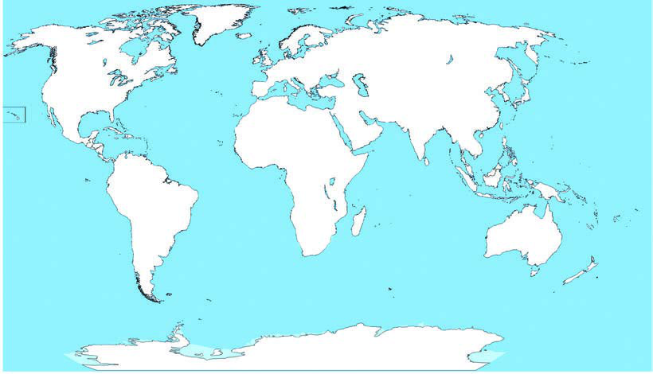<figcaption>Figure fig_ch01_p019_08 (Page 19)</figcaption></figure>
  <div class="page-content">
    <p>”›šuśÆ†›ų§Œ¢ųšĞ§<br>ǢšÄ¢Å§-&lt;<br>19<br>z Ɯuā¡‘gÚ›“‘ÅĹÆ<br>z<br>z<br>z<br>z<br>¢šs‹žˆ}c †›Žœä›ă§ x“¡} ‚ų›Ž›Úų †“œ†”›šu<br>¢sůāÇ n¡‚š¡Ú ŽšzDzā‘›š¡ų§ s¡Ĭś ˆĞ›s ˆžÅś<br>šÚs<br>†“œ†”›šu¢sůāÇ<br>ŽšzDzc<br>¡zœ¡Úš<br>-------------------------------------------------<br>zšÅ¡Œš<br>-------------------------------------------------<br>e›¢sš•§<br>-------------------------------------------------<br>¡Œ—Åu§<br>-------------------------------------------------<br>zšÅ¡Œš<br>¡Œ—Åu§<br>¡zœ¡Úš<br>e›¢sš•§<br>‹žˆ}c</p>
  </div>
</section>
<section class="page-section" id="page-20">
  <div class="page-header"><span class="page-number">Page 20</span></div>
  <figure class="diagram-card" id="fig_ch01_p020_01"><figcaption>Figure fig_ch01_p020_01 (Page 20)</figcaption></figure>
  <figure class="diagram-card" id="fig_ch01_p020_02"><figcaption>Figure fig_ch01_p020_02 (Page 20)</figcaption></figure>
  <figure class="diagram-card" id="fig_ch01_p020_03"><figcaption>Figure fig_ch01_p020_03 (Page 20)</figcaption></figure>
  <figure class="diagram-card" id="fig_ch01_p020_04"><figcaption>Figure fig_ch01_p020_04 (Page 20)</figcaption></figure>
  <figure class="diagram-card" id="fig_ch01_p020_05"><figcaption>Figure fig_ch01_p020_05 (Page 20)</figcaption></figure>
  <figure class="diagram-card" id="fig_ch01_p020_06"><figcaption>Figure fig_ch01_p020_06 (Page 20)</figcaption></figure>
  <figure class="diagram-card" id="fig_ch01_p020_07"><figcaption>Figure fig_ch01_p020_07 (Page 20)</figcaption></figure>
  <figure class="diagram-card" id="fig_ch01_p020_08"><figcaption>Figure fig_ch01_p020_08 (Page 20)</figcaption></figure>
  <figure class="diagram-card" id="fig_ch01_p020_09"><figcaption>Figure fig_ch01_p020_09 (Page 20)</figcaption></figure>
  <figure class="diagram-card" id="fig_ch01_p020_10"><figcaption>Figure fig_ch01_p020_10 (Page 20)</figcaption></figure>
  <figure class="diagram-card" id="fig_ch01_p020_11"><figcaption>Figure fig_ch01_p020_11 (Page 20)</figcaption></figure>
  <figure class="diagram-card" id="fig_ch01_p020_12"><figcaption>Figure fig_ch01_p020_12 (Page 20)</figcaption></figure>
  <figure class="diagram-card" id="fig_ch01_p020_13"><figcaption>Figure fig_ch01_p020_13 (Page 20)</figcaption></figure>
  <figure class="diagram-card" id="fig_ch01_p020_14"><figcaption>Figure fig_ch01_p020_14 (Page 20)</figcaption></figure>
  <figure class="diagram-card" id="fig_ch01_p020_15"><figcaption>Figure fig_ch01_p020_15 (Page 20)</figcaption></figure>
  <figure class="diagram-card" id="fig_ch01_p020_16"><figcaption>Figure fig_ch01_p020_16 (Page 20)</figcaption></figure>
  <figure class="diagram-card" id="fig_ch01_p020_17"><figcaption>Figure fig_ch01_p020_17 (Page 20)</figcaption></figure>
  <figure class="diagram-card" id="fig_ch01_p020_19">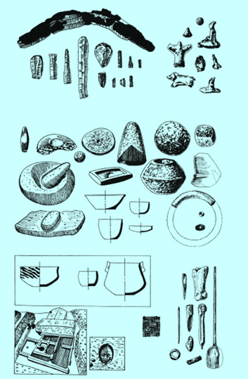<figcaption>Figure fig_ch01_p020_19 (Page 20)</figcaption></figure>
  <figure class="diagram-card" id="fig_ch01_p020_20"><figcaption>Figure fig_ch01_p020_20 (Page 20)</figcaption></figure>
  <figure class="diagram-card" id="fig_ch01_p020_21"><figcaption>Figure fig_ch01_p020_21 (Page 20)</figcaption></figure>
  <figure class="diagram-card" id="fig_ch01_p020_22"><figcaption>Figure fig_ch01_p020_22 (Page 20)</figcaption></figure>
  <div class="page-content">
    <p>e…Dzšc<br>–šŒž—Dz”šȼc-<br>20<br>¢š—uc(Metal Age)<br>”›¡} ǚš†Ĺ§ ¢š—āÇ iˆ¢šu›ÚšÄ ‚}ā›<br>¢‚š¡}Œ†•DzÅ¢š—uś¢Ú§Ƃ¢“”›ă–š¢ÿ‚›s<br>“›„Dz›ÆŒ†•DzÅ£s“Ž›ă ˆ¢Žšu‚›“Dzތš›Ƃs}Œš<br>sųsšŒš§¢š—ucŒ†•DzÅf„DzŒš›iˆ¢šu›ă<br>¢š—c¡xƠš›Žų<br>ƂՂ›„ĹŒš ¡xƠ›¡†f…ā‘ciˆsŽā‘ŒšÚ›<br>Œšǯų –š¢ÿ‚›sŽœ‚› h vĞśÆ Œ†•DzÅ £s“Ž›ă<br>f„Dzsš sšÅ•›s÷šŒā‘š xš‚Æ ¡—šs§ ‚Åڛ
<br>x¢š†“}ÚÄ–››
e›¢sš•§gšÄ
mų›“›}ā<br>‘›Æ†›ųc ¡xƠ›¡ź–šų›…Dzcs¡Ĭś›ĞĬ§Š›–›g<br>7000 Œš§g‚›¡źsšŒš›sÚšÚų‚§<br>gšt›¡tÅ„›•§sųs‘›¡zšÅ¡Œš<br>¢šŠÅЧ ¡z Ɩ›§ “š§ tÅ„›•§ sų<br>s‘›¡ f…†›s gšt§
 zšÅ¡Œš›Æ ˆŽš<br>“Ǚu¢“•Ĺ›†§<br>¢†Ķ‚ǵc<br>†Æs›‚§<br>zšÅ¡Œš›¡<br>z†āÇ ŠšÅ›c<br>ŽĬ‚Žc<br>¢uš‚Ơc Օ› ¡xƫ›Žų f}›¡†c Œǯx›<br>Ɯuā¡‘c gÚ› “‘Åś‚›¡ź “Dzތš<br>–žx†s‘ŒĬ§ g“›}¡Ĺ “œ}sÇ ¡xs<br>}›s‘š›Žų  e“Å s‘›ŒĴ¡sšĬ§ Ɯu<br>ā‘¡}c<br>Œ†•DzŽ¡}c<br>ŽžˆāÇ †›Åƣ›<br>㛎ų  e“Å †›Åƣ›ă<br>Œ†•DzŽžˆā‘›Æ<br>nǯ“c Ƃ…š†¡ƀĞ‚§ uŋ››š<br>ȼœ¡}<br>ŽžˆŒš§<br>¡Œ—Åu§gŦDzÄ<br>iˆ‹žtįś¡<br>†“œ†”›šu<br>¢sůc<br>†“œ†”›šuś¡Ƃ…š<br>†¡ƀĞ –“›¢”•‚s‘š<br>Ɯuā¡‘ gÚ›“‘ÅĹÆ<br>Օ› mų›“Ʃ§<br>‚}Úc<br>s›ă Ƃšxœ†gŦDz›¡<br>f„Dz Ƃ¢„”Œš§ ¡Œ—Å<br>u§ g¢ƀšÇ  ˆšs›Ǚš<br>†›Æ
 mų§ ˆŽš“Ǚu<br>¢“•sÅ<br>sÚšÚų<br>h<br>Ƃ¢„”¡Ĺ<br>Ɩ§<br>Šš–§Úǯ§ q‰§ Šžx›<br>ǚšÄ<br>(bread basket of <br>Baluchistan)mų§ “›‘›Úų<br>“Dz‚DzǙ ”›šu sšvĞā¡‘ x“¡}<br>‚ų›Ž›Úų –žx†s‘¡} e}›ǚš†<br>śÆ “›”s†c ¡xƫ§ pŽ ›z›ǯÆ<br>ˆ‚›ƀ§ ‚ƮššÚ› –šŒž—Dz”šȼãƔ›Æ<br>Ƃ„Å”›ƀ›Ús<br> <br>z iˆsŽāÇ<br> <br>z iˆzœ“†Žœ‚›sÇ<br> <br>z f”“›†›Œc</p>
  </div>
</section>
    </main>
    <footer>
      <div class="nav-bar"><span class="nav-bar disabled"></span><a href="index.html">☰ Index</a><a href="part_1_pages_2140.html">Pages 21-40 →</a></div>
    </footer>
  </div>
</body>
</html>
